3Days ワークショップフロー: AI とつくる「自分の SaaS の MVP」
完成形の動くデモ（玄米茶サンプル）: https://genmaicha-back-demo.y-arai-a8a.workers.dev/ — この3日間で、このような「LP（ランディングページ＝サービス紹介の1枚ページ）＋購入＋マイページ」の SaaS を自分の題材で作る。
ワークショップの目的・ゴール
前提知識（この3日間で前提とすること）
- Claude Code を使ったことがある（起動・依頼・承認/拒否の基本操作が分かる）
- Git を用いた開発経験がある（ブランチ・commit・push が一通りできる）
- ソフトウェア開発の基本知識（基本情報技術者試験程度）
目的
- Claude（Design / Code）を使った開発フローを3日間で一周する
- 「AI にどう頼むと良いものが出てくるか」の肌感をつかむ
- デザイン → フロント → バック → テスト → デプロイ → 機能拡張 という実務に近い開発サイクルを、AI を駆動しながら一通り体験する
題材: 各自が作りたい SaaS の MVP（事前に考えてきてもらう）
- 題材は各自が作りたい SaaS を持ち寄る。「流れを体験するのが目的」なので題材は自由だが、サブスクリプション（月額/年額課金）を必須とする
- ただし3日間で一周できるよう、MVP（Minimum Viable Product＝必要最小限の機能に絞った最初の製品版）に落とし込んでおく
- 資料中の例「玄米茶」は説明用の共通サンプル: 「チャットの中に、ちいさな相棒を」という会話アシスタントを、ライセンスキーの月額/年額サブスクで売る小さな SaaS
- 自分の題材では、このページ構成・機能を自分のサービスに読み替える
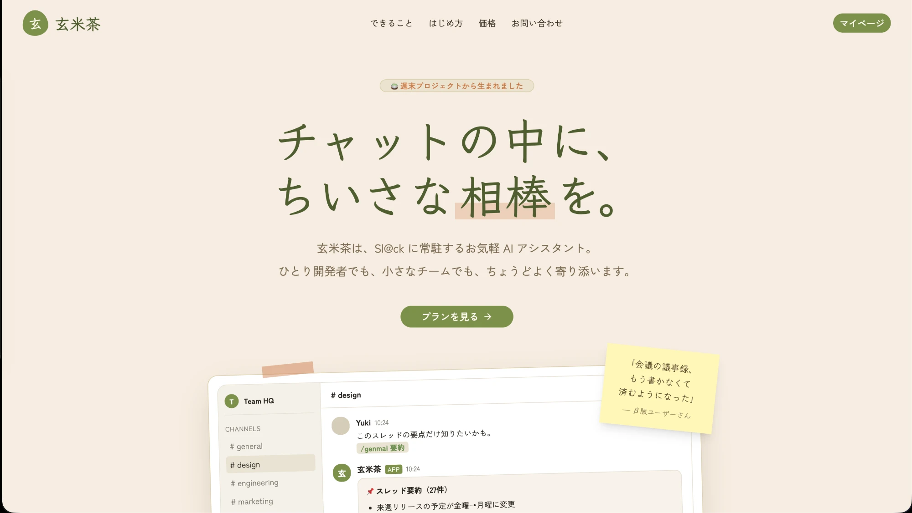
/（LP） 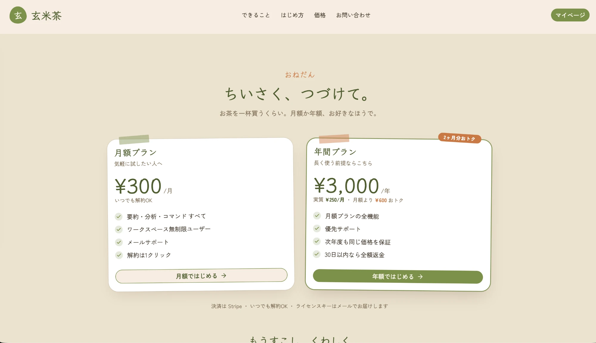
価格 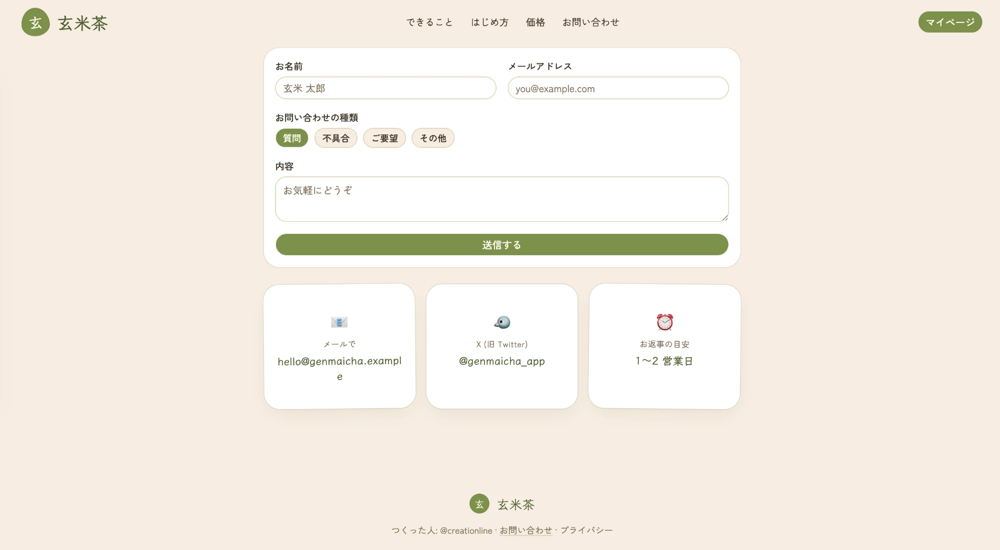
/contact 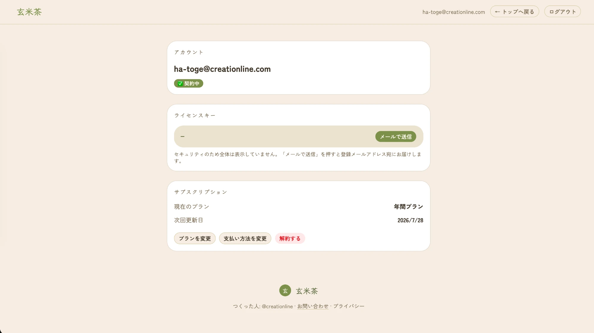
/mypage 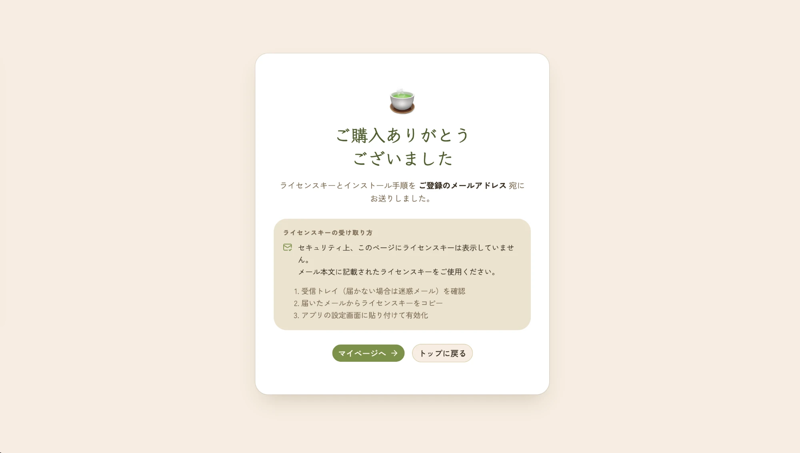
/success - 注意喚起: 3日間で一周するため、Day 2 までは構成を盛りすぎない（拡張は Day 3 のオプションで）
必須機能（Day 2 までに作るものの最低ライン）
ライセンスキー（購入の証として発行する一意の文字列）の配布は、題材によらず全員共通の実装要件。「ライセンスキー」は玄米茶サンプルでの呼び方なので、自分の SaaS では呼び名と意味づけ（アクセス権の証・ダウンロードコード等）だけを自分のサービスに合わせる。
Day 2 到達時点の見本（玄米茶サンプル）: https://testai-genmaicha.ha-toge.workers.dev/ — 下の5機能が動く状態がゴール。
各ページの URL・役割・ナビゲーションの遷移先は 画面構成とナビゲーション で定義する。ここでは「Day 2 までに動くべき機能」だけを挙げる。
| # | 機能 | Day 2 までの完成ライン |
|---|---|---|
| 1 | LP | サービス紹介と料金を掲載し、公開 URL で表示できる |
| 2 | 価格表示 | 料金プラン（月額／年額など）を見せ、行動を促すボタン（CTA）から購入フロー（メールアドレス入力）に進める |
| 3 | お問い合わせフォーム | 入力 → 送信 → 受付（POST /api/contact）が通る |
| 4 | マイページ | メールアドレス入力の簡易ログインで購入情報・ライセンスを表示（本物のログインは Day 3 Clerk [9]） |
| 5 | ライセンスキーの配布 | メールアドレスのみ入力 → ライセンスキーを発行 → 完了画面で表示（決済なしの簡易版） |
- 5 は Day 2 では決済なし・メールアドレス入力のみでキーを発行する流れまでを実装する。「Stripe 購入 → Webhook（決済完了などのイベントを、外部サービスが自分の API の URL に通知してくる仕組み）で自動発行」への差し替えは Day 3 オプション [8]。
全体マップ
![ワークショップフロー図: Core（[1]デザイン→[2]フロント→[3]フロントデプロイ→[4]バック→[5]自動テスト→[6]デプロイ）と Option（[7]メール/[8]決済/[9]ID連携/[10]運用保守/[11]セキュリティ/[12]テスト設計）](img/workshop_flow_diagram.svg)
| Day | テーマ | 内容 |
|---|---|---|
| Day 1 | つくる | 目的・技術紹介 / 環境確認 / [1] デザイン / [2] フロント / [3] フロントデプロイ |
| Day 2 | つなぐ・公開する | [4] バック / [5] 自動テスト / [6] 再デプロイ（Day 1 と同じ URL に API を統合） |
| Day 3 | 育てる | オプション課題 [7]〜[12] / ラップアップ・発表会 |
ゴール（完了条件）
| # | タスク | Day | 難易度 | 完了条件 |
|---|---|---|---|---|
| [1] | デザイン | Day 1 | LP の配色・トーン・セクション構成が決まり、デザインを zip で書き出せる | |
| [2] | フロント | Day 1 | npm run dev の表示 URL で表示崩れなし／React Router で4ページ遷移できる | |
| [3] | フロントデプロイ | Day 1 | https://<name>.workers.dev で LP が表示され、URL を他の参加者と共有できる | |
| [4] | バック | Day 2 | フロントと API がつながりローカルで一通りの機能が動く。/api/me は未認証で弾かれ、/api/contact は不正入力で弾かれる | |
| [5] | 自動テスト | Day 2 | npm test がグリーン（全テスト成功）。純粋関数・正常系・異常系・未認証テスト各1本以上 | |
| [6] | デプロイ | Day 2 | 自分の https://<name>.workers.dev で LP が表示され /mypage も 404 にならない | |
| [7] | メール（Resend） | Day 3 | ★☆☆ | 問い合わせ受付やライセンス送付などのメールを実装し、自分宛に届くことを確認できる |
| [8] | 決済（Stripe） | Day 3 | ★★★ | Stripe Checkout → Webhook でライセンスキー自動発行。テスト用カードでマイページにライセンスキーが表示されること |
| [9] | ID 連携（Clerk） | Day 3 | ★★☆ | 未ログインで /mypage に入れない・/api/me がログイン必須になっている |
| [10] | 運用保守（Cloudflare ログ確認・スキル化） | Day 3 | ★☆☆ | wrangler tail でログ確認できる・運用スキルが1つ動作する |
| [11] | セキュリティ（SonarCloud 静的解析・脆弱性レビュー） | Day 3 | ★★★ | 認証境界・IDOR・機密マスクを点検し、問題を最低1つ修正（余裕があれば回帰テストを追加） |
| [12] | テスト設計（何をテストすべきか自分で決める） | Day 3 | ★★★ | 主要機能を1つ選び「こう動くべき」を自分で仕様化→期待動作表→テストまで設計。AI に丸投げせず、壊すとテストが赤くなることまで確認できる |
必達は [1]〜[6]（Day 1〜2 全員）。
Day 3 の [7]〜[12] は任意(やらない／1つだけ、も可)。
タイムテーブル目安（各日 2 時間 × 3 日 ＝ 計 6 時間）
Day 1: つくる — 環境確認 + デザイン + フロント + デプロイ
| 経過 | 内容 |
|---|---|
| 0:00–0:10 | オープニング: 目的・ゴール・技術紹介・全体像 |
| 0:10–0:20 | 環境確認（node / git / claude 確認。手短に。wrangler は [3] で導入） |
| 0:20–0:50 | [1] Claude Design（LP のデザインシステム（配色・トーン・構成）を確定する。3案 → 1つ選ぶ → zip 書き出し。機能ページは [2] で Claude Code が実装） |
| 0:50–1:35 | [2] フロント作成（デザイン zip を渡して全画面・モックで動かす） |
| 1:35–1:50 | [3] フロントを Cloudflare Workers にデプロイ（URL を共有） 🎉 |
| 1:50–2:00 | クロージング: dev ブランチに git push できているか確認 |
Day 2: つなぐ・公開する — バック＋テスト＋デプロイ（ここまでが必達）
| 経過 | 内容 |
|---|---|
| 0:00–0:10 | 前回振り返り・キャッチアップ |
| 0:10–1:05 | [4] バック作成（API 実装 → フロント結合 → 配信一本化＝フロントと API を Worker 一本にまとめる） |
| 1:05–1:35 | [5] 自動テスト（正常系・異常系・未認証テストを最低1本ずつ） |
| 1:35–1:55 | [6] デプロイ（wrangler deploy + D1 マイグレーション → workers.dev URL で動作確認・再デプロイ） 🎉 |
| 1:55–2:00 | クロージング: 到達確認・Day 3 課題選択（やる人だけ） |
Day 3: 育てる（オプション課題 ＋ 発表会）
| 経過 | 内容 |
|---|---|
| 0:00–0:10 | オプション課題のガイダンス（必須ではない・やらない・1つだけ、も可） |
| 0:10–1:30 | 自由作業: Day 1〜2 の残タスクを続ける、またはオプション課題（[7]〜[11] から1つ）——どちらでも可 |
| 1:30–2:00 | 最終発表会（1人3分）＋ ラップアップ・アンケート |
各日、固定の休憩枠は設けない。AI の生成待ち（[1] の3案生成・[4] の実装生成など数分かかる場面）を小休止・雑談に充てる。長い生成中は席を立ってよい。
進み方は各自のペースでよく、予定より早く終わった人はそのまま次の実装に進んでよい。また Day 3 の [7]〜[11] はオプション課題で、この時間は各自が資料を読みながら選んで進める形になる。わからないことがあれば、講師にチャット等で質問してほしい。
使う技術の紹介

| カテゴリ | 技術 | 選定理由（一言） |
|---|---|---|
| AI（デザイン） | Claude Design | プロンプトから UI デザインを生成 |
| AI（実装） | Claude Code | ターミナルで動くコーディングエージェント |
| フロント | Vite + React + TypeScript | デファクト。AI が一番得意なスタック |
| スタイル | Tailwind CSS v4 + shadcn/ui | デザインの再現がしやすい |
| バック | Hono (TypeScript) | 軽量な Web フレームワーク。Workers と相性抜群 |
| 実行基盤 | Cloudflare Workers | 無料枠で本番公開まで行ける |
| DB / KV | Cloudflare D1 / Workers KV | D1＝SQLite データベース・KV＝キー値ストア。Workers にビルトインでセットアップ最小 |
| テスト | Vitest（+ vitest-pool-workers） | フロント・バックで統一できる |
| （Day 3） | Resend / Stripe / Clerk / SonarCloud | Day 3 のオプション課題で登場 |
参考バージョン（動作確認時点: 2026-07）
下記は本ワークショップで一周を通して動作確認したときの版（あくまで参考）。基本は最新版で進めてよいが、ライブラリ更新で手順や API が変わって詰まることがある（特にテスト系）。うまくいかないときは、この版に戻すと安定する。
| 対象 | パッケージ＠バージョン |
|---|---|
| フロント基盤 | vite@8.1.3 / @vitejs/plugin-react@6.0.3 / react@19.2.7 / react-dom@19.2.7 / typescript@6.0.3 |
| ルーティング | react-router-dom@7.18.1 |
| スタイル | tailwindcss@4.3.2 / @tailwindcss/vite@4.3.2 |
| shadcn/ui 関連 | class-variance-authority@0.7.1 / clsx@2.1.1 / tailwind-merge@3.6.0 / lucide-react@1.23.0 / tw-animate-css@1.4.0 / @radix-ui/react-slot@1.3.0 / @radix-ui/react-label@2.1.11 / @radix-ui/react-accordion@1.2.16 |
| テスト（[5]） | vitest@4.1.10 / @cloudflare/vitest-pool-workers@0.18.0 |
事前準備（参加者に事前周知）
電話番号が必要なツールは無し。
⓪ 考えてくる
- 自分が作りたい SaaS の MVPをざっくり考えてくる（どんなサービスか・必須機能をどう満たすか）。サブスクリプション（月額/年額課金）を必須とする。迷う人は「玄米茶」をそのまま自分の題材にしてもよい
① 事前に作っておくアカウント（全員必須）
- Claude — Claude Code / Claude Design で使用。有料プラン（Pro 以上）のアカウントを用意する
- GitHub — リポジトリ取得・SonarCloud のログインにも使う（当日のアカウント作成は時間を食うので必ず事前に）
- Cloudflare — デプロイ先 [6] は全員必達なので事前に作っておく（アカウント作成は無料・電話番号不要）
② 事前にインストールしておくツール
- Claude Code CLI:
- macOS / Linux / WSL は
curl -fsSL https://claude.ai/install.sh | bash（Homebrew ならbrew install --cask claude-code） - Windows（ネイティブ）は PowerShell で
irm https://claude.ai/install.ps1 | iex（またはwinget install Anthropic.ClaudeCode）
- macOS / Linux / WSL は
- Node.js 24 LTS（長期サポート版）を推奨（最低 20 以上。18 はサポート終了）:
- 未インストールなら nodejs.org のインストーラーで導入
- 既にインストール済みでバージョンが古い場合は、
nvm等のバージョン管理ツールがあればnvm install 24 --lts、なければ nodejs.org から最新 LTS インストーラーを再インストール（上書き）すればよい
- git（各 OS 標準の方法でインストール）
③ 当日取得するアカウント（無料・電話番号不要）
- Resend — メール課題 [7] で使用
- Stripe — 決済課題 [8] で使用
- Clerk（ユーザー認証 SaaS）— 認証課題 [9] で使用
- SonarCloud — セキュリティ課題 [11]。GitHub アカウントでログインできる
④ 当日インストールするツール
- Stripe CLI（Day 3 [8] 決済課題をやる人のみ必要）:
- macOS は
brew install stripe/stripe-cli/stripe - Windows は
winget install Stripe.StripeCLI
- macOS は
Git ブランチ（dev → main）
前提: GitHub でリポジトリ（名前は全員共通で 3days-workshop、Private）を新規作成し、ローカルに clone してから以下を実施する。フロント・バックは同じリポジトリ（モノレポ）で管理する。
- 最初に
devブランチを切り、作業はすべてdevで進める - 区切りのいいところでこまめに commit / push（環境が壊れても作業を失わないための保険）
- 各日のクロージングで「dev に push 済みか」を必ず確認（翌日のキャッチアップが楽になる）
dev→mainへのマージは、セキュリティ課題（SonarCloud 解析）に着手する前に行う（SonarCloud 無料版はmainブランチしか解析しないため）。main＝ 公開・解析対象の安定版。セキュリティ課題をやらない場合は、最後に一度マージして締めればよい（任意）

Claude Code へのプロンプト例（最初の1回）:
dev ブランチを切って、リモートに push して。main へのマージ（セキュリティ課題の前、またはやらない場合は最後に）:
dev ブランチを main にマージして、main をリモートに push して。- 秘密ファイル（
.dev.vars＝ローカル開発用のシークレット置き場。Day 2 [4] で作る——等）は.gitignoreで必ず除外してコミットしない
Day 1: つくる
環境確認タイム
node -v（24 LTS 推奨、最低 20 以上）/git --version/claude --versionを確認- Claude Code がログイン済みで起動できるか（
claudeを叩いて会話できる状態か） - Claude Design に claude.ai でアクセスできるか（https://claude.ai/design にブラウザでログイン確認）
- GitHub で自分のアカウントに新規リポジトリを作成し、ローカルに clone できるか（[2] で使うリポジトリは当日作成する）
- Cloudflare アカウントにログインできるか（https://dash.cloudflare.com/／
wrangler loginは Day 1 の [3] フロントデプロイで実行します）
Claude Code のセキュリティ対策（最初に1回）
大前提（3日間ずっと効く）: 秘密情報（API キー・トークン）は Claude への指示にも会話にも貼らない。
.dev.varsに入れて参照させる。AI が書いたコードも読まずに承認しない。
秘密を Claude に読ませない設定
よくある勘違い: 「
.claudeignoreを作る」→ Claude Code に.claudeignoreは無い。正しくは.claude/settings.jsonのpermissions.denyで「読み取り禁止」を宣言する。
プロジェクト直下に .claude/settings.json を作り、秘密ファイルへの Read を拒否しておく（.claude/ ディレクトリがなければ mkdir -p .claude で作成）:
{
"permissions": {
"deny": [
"Read(./.dev.vars)",
"Read(./**/.dev.vars)",
"Read(./.env)",
"Read(./.env.*)",
"Read(./**/.env)",
"Read(./**/.env.*)",
"Read(./secrets/**)"
]
}
}denyは最優先。万一「.dev.vars読んで」と頼んでも Claude は読めない＝事故防止- 秘密ファイル（
.dev.vars）が実際に登場するのは [4] バックから。設定だけ先に置いておくのがコツ
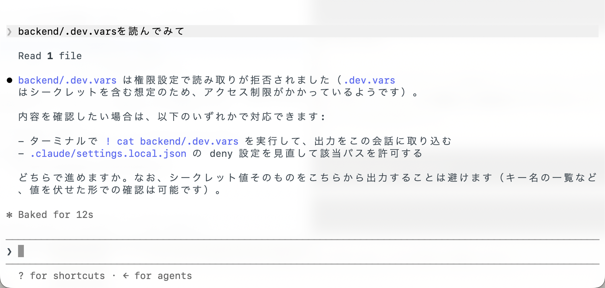
.dev.vars）を「読んで」と頼んでも Claude が読み取りを拒否する様子。※ 実際に自分で試せるのは .dev.vars ができる Day 2 [4] 以降。security-guidance プラグインを入れておく
security-guidance: Claude が生成したコードをバックグラウンドで自動セキュリティレビューしてくれるプラグイン。SQL インジェクション（等）・XSS（悪意あるスクリプトを画面に混入させる攻撃）・SSRF（サーバーに内部への不正リクエストをさせる攻撃）・IDOR（他人のデータを覗ける穴）・認可バイパス（ログインできた人が権限外のデータ・操作に届いてしまう穴）など 25 種類以上の脆弱性クラスを継続的に見てくれる。「AI が書いたコードを AI が点検する」を自動でやってくれるのがポイント。
メニューから入れる。まず次を実行:
/plugin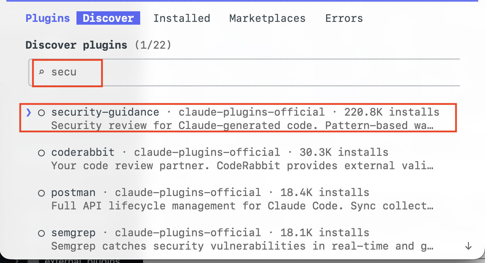
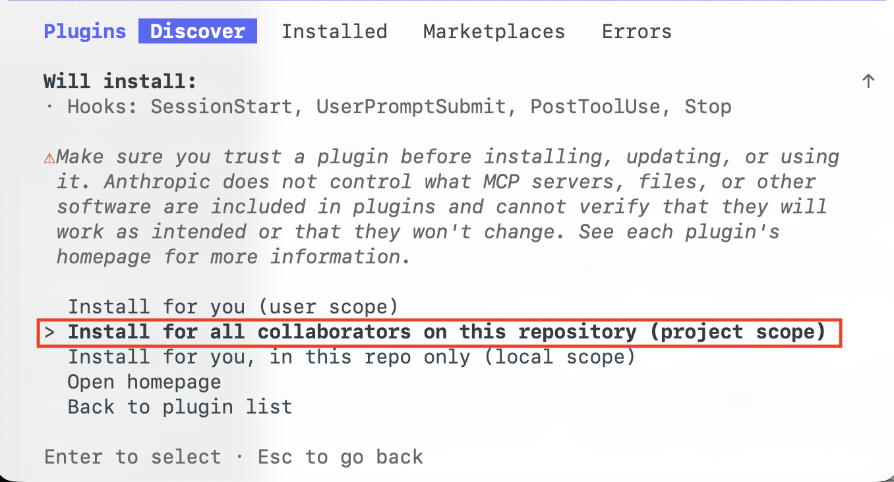
選択したら、有効化のため次を実行:
/reload-plugins※ 見つからない場合はスキップ可。Day 1〜2 の本編には影響しません。
- インストール後、リストに
security-guidanceが出るか確認する:/plugin list - 前提:
python3が PATH に通っていること（プラグインの内部スクリプトが Python 製のため）。無ければこのプラグインはスキップ可 - うるさく感じたら無効化できる（元に戻すときは
disableをenableに）:/plugin disable security-guidance
npm パッケージの取り込みを制限する
公開直後のパッケージは、乗っ取られたメンテナー権限で悪意あるコードが仕込まれていても発覚が追いついていないリスクがある。プロジェクト直下に
.npmrcを作り、公開から7日未満のパッケージを取り込まない設定と、インストール時の既知脆弱性チェックを必須化する設定を入れておく。
min-release-age=7
audit=truemin-release-age=7: 公開7日未満のバージョンはnpm installの対象外にする（typosquatting（名前の似た偽パッケージ）・乗っ取りアカウントからの悪性パッケージが広まりやすい初動期間を避ける）- ⚠️
min-release-ageは npm 11.10.0 以降で有効。推奨の Node 24 LTS なら npm 11 系が同梱される（Node 20/22 は npm 10.x 同梱で無視されて効かない）。いずれにせよ必ずnpm -vで確認し、11.10.0 未満ならnpm install -g npmで更新する audit=true:npm install実行時に自動でnpm audit相当の脆弱性チェックが走る（デフォルトで有効だが、明示しておくと誤ってオフにされにくい）- AI に依存パッケージを追加してもらう場面（[4] バック実装など）でも、この設定は自動的に効く
画面構成とナビゲーション（[1] 着手前に確認する）
[1] Claude Design を始める前に、この構成を固める。 あいまいなまま渡すと「購入する」ボタンが問い合わせに飛んだり、マイページがダッシュボード型（問い合わせ数・AI解決率などの運用指標を並べる画面）になったりする。以下は玄米茶サンプルでの例。自分の題材ではページ名・役割（「ライセンスキー」など）を自分のサービスに読み替えて、同じ形式で定義を固める。
ページ構成
| URL | ページ名 | 役割 |
|---|---|---|
/ | LP | ヒーロー（メインビジュアルセクション）・特徴・料金・FAQ。行動を促すボタン（CTA）から購入フローへ |
/contact | 問い合わせ | フォーム送信（POST /api/contact） |
/mypage | マイページ | アカウント情報・ライセンスキー・サブスクリプション（Day 2 はメールアドレス入力画面経由） |
/success | 購入完了 | 購入フロー（料金セクションのメールアドレス入力）から遷移して表示する完了画面。直接開くページではない（Day 3 [8] で決済後の戻り先に差し替え） |
ナビゲーション・ボタンの遷移先
グローバルナビ＝全ページ共通で上部に置くメニュー。
| ボタン / リンク | 設置場所 | 遷移先 |
|---|---|---|
| 特徴 | グローバルナビ | /（特徴セクションへスクロール） |
| 料金 | グローバルナビ | /（料金セクションへスクロール） |
| FAQ | グローバルナビ | /（FAQ セクションへスクロール） |
| お問い合わせ | グローバルナビ | /contact |
| マイページ | グローバルナビ | /mypage（メールアドレス入力 → 簡易ログイン後に表示） |
| 購入する | グローバルナビ・ヒーローの行動を促すボタン（CTA） | /（料金セクション）→ メールアドレス入力フォーム → Day 3 [8] 後は Stripe Checkout（Stripe がホストする決済ページ）に差し替え |
⚠️ 行動を促すボタン（CTA）のテキストは「購入する」。「無料で試す」は使わない。クリック先はコンタクトページではなく料金セクション（または購入画面）。
リポジトリのディレクトリ構成（[2] 着手前に確認する）
フロント・バックは1つのリポジトリ（モノレポ）に frontend/・backend/ として並べる。最終的には backend/ の Worker が両方まとめて配信する（[4] 手順5）。
repo-root/
├── .claude/
│ └── settings.json # Claude Code の deny 設定（Day 1 セキュリティ対策）
├── .npmrc # npm パッケージの取り込み制限（Day 1 セキュリティ対策）
├── SCREEN_SPEC.md # 画面仕様（[2] 着手前に作る）
├── frontend/ # Vite + React + TypeScript（[2]）
│ ├── src/
│ │ └── pages/ # /, /contact, /mypage, /success
│ ├── .env # フロント用の公開可能な変数（[9] Clerk の Publishable key）
│ ├── wrangler.jsonc # Day 1 単独デプロイ用（[3]）。[6]で統合後は使わない
│ └── package.json
├── backend/ # Hono + Cloudflare Workers（[4]）
│ ├── src/
│ │ ├── index.ts
│ │ └── routes/ # 例: me.ts, contact.ts など
│ ├── migrations/ # D1 マイグレーション
│ ├── docs/
│ │ └── TEST.md # テスト戦略書（[5]）
│ ├── wrangler.jsonc # 最終的にフロント＋APIを1つのWorkerで配信（[6]）
│ ├── .dev.vars # ローカル用シークレット（.gitignore 済み）
│ └── package.json[1] Claude Design でサイトデザイン作成
ゴール: LP のデザインシステム（配色・トーン・コンポーネントの雰囲気）を確定し、zip でエクスポートする。作るのは LP（/）のみ — 機能ページは [2] で Claude Code が実装する。
アクセス: Claude Design は claude.ai にブラウザでログインして使う（Claude Code と同じアカウント）。左サイドバーの「Explore Claude」→「Claude Design」を選ぶか、https://claude.ai/design に直接アクセス。
なぜ LP だけなのか
Claude Design はトークン消費量が多く、標準的なプランでは全ページ分を作り込む余裕がないため、今回は LP のデザインシステムに絞る（機能ページは「画面構成とナビゲーション」で決めた仕様を Claude Code に実装させる）。トークンに余裕があれば全ページを Claude Design で作ることも可能。
事前確認: モデルと Effort の設定・デザインシステムのリセット
Claude Design を開くと「Make something new」の一覧が表示される。ここでは「Product prototype」を選ぶ（Slides・Document 等は使わない）。一覧の右上に「Design system: None」表示がある。過去に使ったデザインシステム名が残っていることがあるので、「None」になっているか確認し、違えばリセットしてから始める。
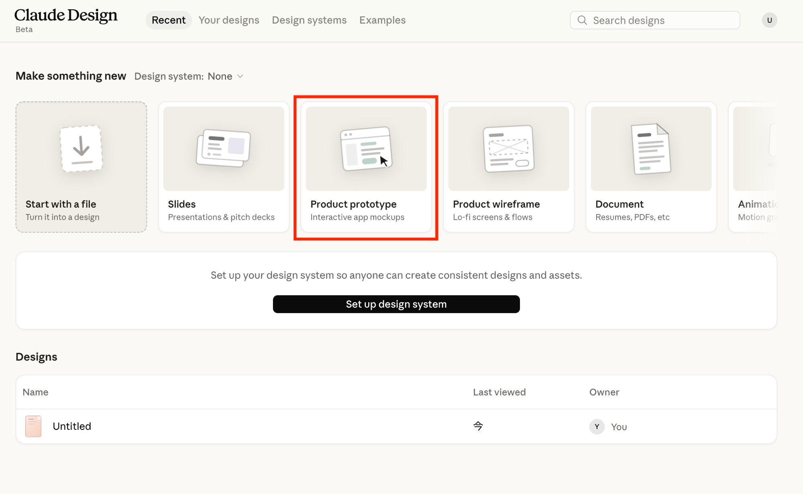
「Product prototype」を選ぶと、プロンプト入力欄の画面に移る。ここにもリセット確認ポイントが1つ: 入力欄の左上のドロップダウンに以前のデザインシステム名（例「White base mono tone page…」）が残っていることがある。新規に作る場合はこの欄を「None」相当に戻してからプロンプトを入力する。
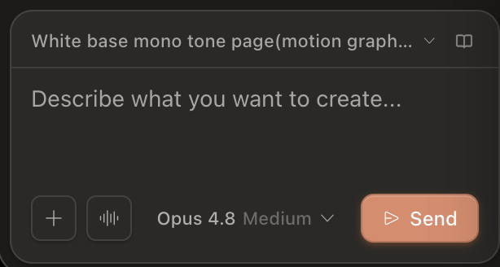
同じ画面にモデルと Effort（AI がどれだけ深く考えるかの設定）もある。執筆時点（2026-07）の推奨は Opus 4.8 / Effort: High。モデル名は更新されるので、その時点の最上位モデル＋高い Effort になっているか確かめてから生成する。
この画面の配置は Claude Design のバージョン更新で変わることがある（プラン・環境によって表示が異なる場合もある）。見当たらない場合は入力欄の周辺・設定メニューを探す。
流れ
- Claude Design に「何を・誰に向けて作るか／何を売るか／欲しい機能」を伝えて LP だけデザインを生成する
- Claude Design は、トーンや配色など方向性を決める質問を自分から投げ返してくれる。だから最初から「和モダンで緑系で…」と細かく指定する必要はない。むしろサービスの中身（何のサービスか・売りたいもの・載せたい機能）を伝える方が効く
- 最初に渡すプロンプト例:
Slack AI サブスク SaaS『玄米茶』の LP を作りたい。 月額／年額プランを売りたい。 載せたいのは特徴・料金プラン・FAQ・お問い合わせへの導線。 ターゲットはライトエンジニア層。

- 質問された時に「デザイン案を3つ出してもらう」よう伝える（生成には数分かかる。待っている間に
SCREEN_SPEC.md（[2] で使う画面仕様）を書き始めてよい） - ページ構成の選択肢（「LP 一枚」「複数ページ」など）を聞かれたら「LP 一枚」を選ぶ。マイページ等の他ページは Claude Design では作らず、[2] Claude Code で実装する
- 出てきた3案を見比べて1つ選ぶ
- 最初の1案でなんとなく進めず、3案を見比べてから決める（選択肢を見てから選ぶのが AI 活用のコツ）
- 「なんとなく好き」で選んでよい。完璧を求めない。後から Tweaks とチャットで詰められる

- トーン・配色・アクセントは画面上部の「+ Tweaks」から後で調整できる（プロンプトに盛り込まなくても、触って変えられる）
- 「+ Tweaks」を押すと「Describe a tweak...」欄が出る。フリーテキストで指示するか、「Ideas」からおすすめの調整候補を選べる
- 開くと見た目（paper・layout）や宣伝文言（UI では「コピー」「voice」と表記）などプリセットで切り替えられる項目が並ぶ。「なんかちょっと違う」と感じたらここを触るのが早い
- Tweaks で調整してもすぐにチャットで「やっぱり元に戻して」と言えば戻せる
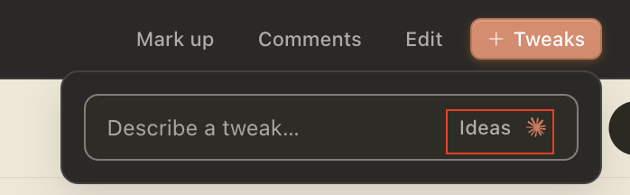
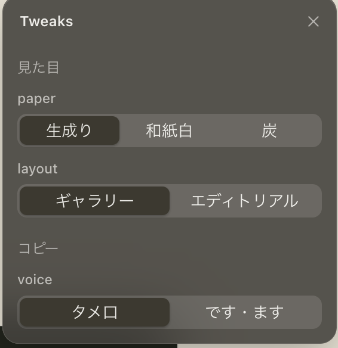
- LP を見直し、不要なセクションや機能はチャットで削除・修正を依頼する
- Claude Design はプロンプトの意図を超えて機能やセクションを追加することがある。「このセクションは不要です」「このボタンを消してください」とチャット欄で伝えれば修正してもらえる
- 「他ページ（マイページ・問い合わせ等）は作らない」。他ページは [2] Claude Code で実装する

- 「Mark up」タブなら画面に直接手描きで注釈しながら指示できる。直したい箇所を丸や矢印で示し、そのまま下の欄に指示を書いて送ると反映される
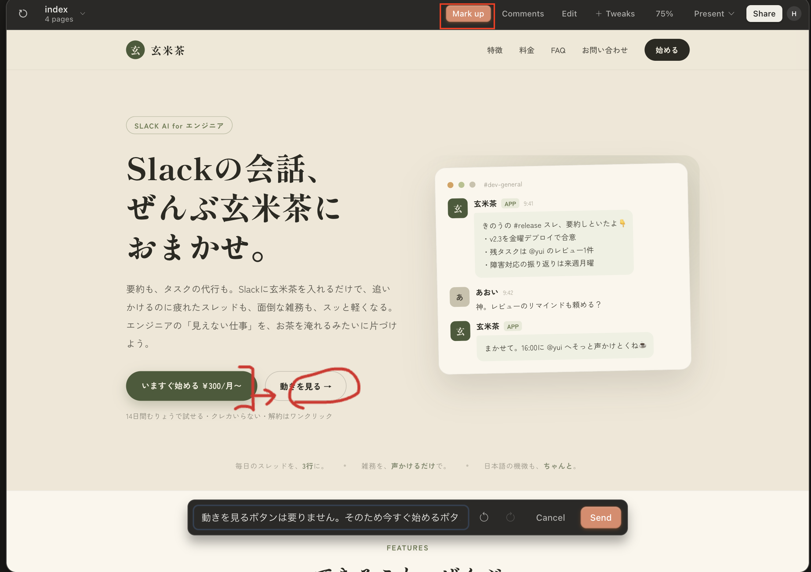
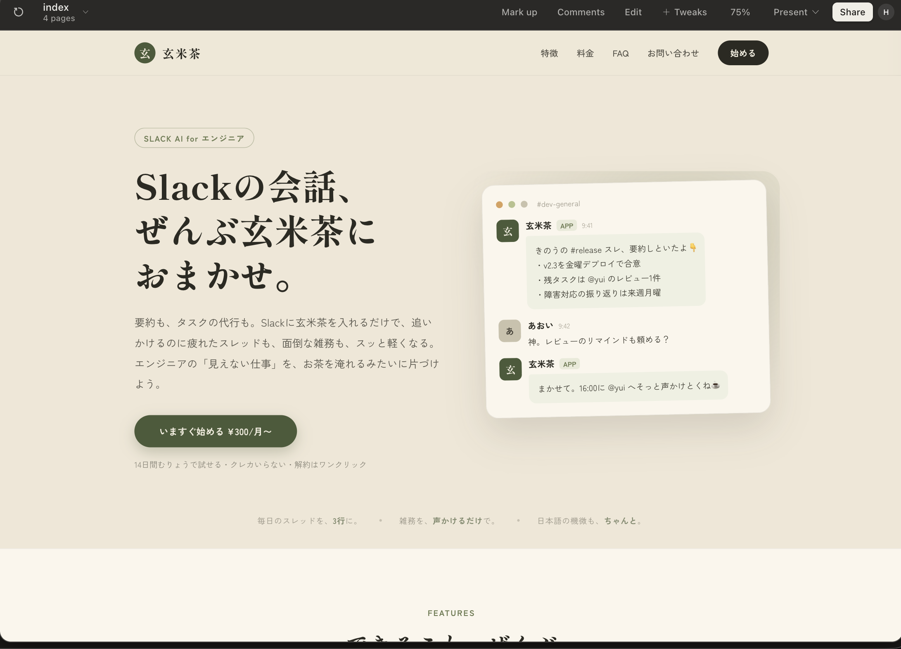
- 仕上がったデザイン（UX＝画面の使い勝手の設計案を含む）は Claude Design の Project を zip でエクスポートしておく
- 操作: 画面右上の「Share」ボタン → 「Project archive (.zip)」を選んでダウンロードする。
- → これを [2] でそのまま Claude Code に渡す。色やフォントを別途テキストで言語化する必要はない（デザインそのものを渡す方が早くて正確）

💡 参考: 細部を数値で直接触りたい場合は「Edit」タブもある。要素を選択すると、リンク先・テキスト・フォント・サイズ・余白などをその場で編集できる。（デザインにこだわる人におすすめの機能）
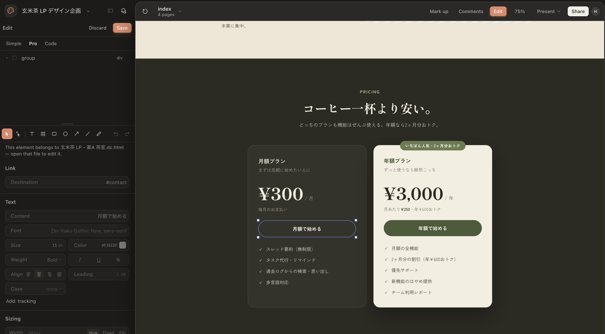
ポイント
- 「それっぽいものが作れた」で十分。完璧より方向性の確定が目的
- 最初に伝えるのはサービスの中身（何のサービスか・売りたいもの・載せたい機能）。色味・トーン・雰囲気は Claude Design の質問に答えながら決めればよく、見た目の細部は後から Tweaks で触る
- いきなり1案に飛びつかない。デフォで出る3案を見比べて選ぶ
- 言語化テキストを書くより、デザイン Project（zip）を丸ごと渡すのが [2] への一番の橋渡し
- チャットは何度でも使える。「このボタンの色を変えて」「このセクションを上に移動して」など気になる点は遠慮なく伝える
- 他ページは指定しない。Claude Design はデザインシステム確定だけに使う
- Claude Design の質問への回答の自由度: トーン・配色・キャッチコピーなどの見た目・言い回しは自由に決めてよい（Claude Design の質問にそのまま答えればよい）。一方、料金プランは「月額・年額の2プラン」を用意するのがワークショップ流の推奨（後続の [2] フロント・[3] バックの実装がスムーズになるため）
✅ 完了の定義（これが満たせたら [2] へ）
- LP の配色・トーン・セクション構成が決まっている
- 「購入する」ボタンが料金セクションへの導線になっている
- デザインを zip でエクスポートでき、[2] にそのまま渡せる状態になっている
[2] Claude Code でフロント作成
ゴール: デザイン通りの SPA（Single Page Application＝1枚の index.html を JavaScript が書き換えて全ページを表示する作り）の全画面がローカル（npm run dev で起動する URL）で動く（Day 1 終了時の到達点）
まず: SCREEN_SPEC.md を作る
Claude Code にプロンプトを渡す前に、リポジトリのルートに SCREEN_SPEC.md を作る。以下は玄米茶の内容をそのまま書いたもの。これをコピーして、自分のサービスの内容に適宜書き換える：
# SCREEN_SPEC.md
## / (LP)
- ヒーロー・特徴・料金プラン（月額/年額）・FAQ
## /contact (問い合わせ)
- 名前・メール・本文
## /mypage (マイページ)
- アカウント情報・ライセンスキー・サブスクリプション状況
## /success (購入完了)
- 購入完了メッセージ＋マイページへのリンクページ自体を増減してもよい（例: マイページの代わりにダッシュボードにする、等）。書き換えたら、下の Claude Code へのプロンプトに「この SCREEN_SPEC.md を参考に実装して」と一言添えて渡す。
大事な前提：フロントとバックは1つのリポジトリ（モノレポ）で管理する
GitHub でリポジトリを1つ作成してローカルに clone し、リポジトリのルートで Claude Code を起動する（frontend/ と backend/ を跨ぐ作業があるため、サブディレクトリではなくルートで起動するのがコツ）。ルート直下にfrontend/（React）とbackend/（Hono）を並べるが、各ディレクトリは下の手順で Claude Code に作らせる（自分でmkdirしなくてよい）。最終的に配信は Worker 一本にまとめる（[4] 手順5）。
流れ
- リポジトリのルートで Claude Code を起動する
- [1] でエクスポートした Claude Design の Project（zip）をリポジトリ直下に置き（例:
design.zip）、以下のプロンプトを自分のSaaSの内容に合わせて適宜書き換えて送る（zip のファイル名が違う場合はプロンプト中のパスも合わせる）言語化テキストではなくデザインそのものを渡す。色・フォント・余白の指定はそこから AI が拾う。
wrangler.jsonc（Cloudflare の CLI「wrangler」の設定ファイル。Worker 名や配信設定を書く）のnameはデプロイ先 URL（https://<name>.workers.dev）になるので自分の名前に書き換えること。name に使えるのは小文字英数字とハイフンのみ（大文字・アンダースコア・日本語は不可）。frontend/ に Vite + React + TypeScript + Tailwind CSS v4 + shadcn/ui で SPA を作って。 ルーティングは React Router を使って。 wrangler.jsonc も作って（name は <自分で決めた名前> にして）。 リポジトリ直下の design.zip（Claude Design のデザイン一式）を展開して参考にし、 ルートの SCREEN_SPEC.md に書いた全画面を実装して。 マイページはアクセス時にメールアドレス入力（簡易ログイン）を挟んでから内容を表示して。購入は料金セクションのメール入力から /success（購入完了）へ遷移させる。/success 自体は直接開かない画面なので、メール入力は付けないで。 この段階では API がないので、全画面モックデータで表示して。 npm run devで全画面を目視確認し、問題があれば具体的に伝えて修正を依頼するAI が生成したコードには表示崩れ・リンク切れ・ボタンを押しても何も起きないといった問題が混入しやすい。「このボタンを押しても何も起きない」「このセクションのレイアウトが崩れている」など具体的に伝えると修正しやすい。共通パーツ（ナビ・フッター）の切り出しは AI が自然にやることが多いので指示不要。
ポイント
- API はまだ無い。この段階ではモックデータで画面が動く状態を作る、と割り切る
✅ 完了の定義（Day 1 の到達点）
npm run dev が使うポートは環境によって変わる（使用中のポートがあれば自動で別のポートが割り当てられる）。ターミナルの出力に表示された URLを開くこと。
npm run devを実行し、表示された URL を開くと LP が崩れずに表示される（Tailwind が効いている）//contact/mypage/successの全画面が実装され、React Router で遷移できる（データは API 前なのでモック）- デザイン [1] の方向性が画面に反映されている
- 完了したら Claude Code に依頼する:
フロント実装の作業をコミットして dev ブランチに push して。
[3] Day 1 フロントデプロイ（Cloudflare Workers）
ゴール: フロントが完成したらすぐに公開 URL を手に入れる（バックは Day 2 で繋ぐ）
Cloudflare Workers は静的ファイル（HTML・CSS・JS・画像など、ビルド済みでそのまま返す配信物）も配信できる。今日はフロントだけを Worker としてデプロイし、Day 2 で API を追加して同じ Worker に統合する。デプロイ先は最初から
workers.devの 1 URL に統一する。
流れ
手順1〜2（インストール〜 whoami）はブラウザ連携とアカウント確認があるため自分のターミナルで打つ。手順3〜4（ビルド〜デプロイ）は Claude Code に「ビルドしてデプロイして」と任せてよい（下のコマンドは自分で打つ場合の参考）。
- wrangler（Cloudflare の CLI ツール。デプロイやクラウド資源の作成をコマンドで行う）をグローバルインストールする:
npm install -g wrangler - Cloudflare にログインする:
wrangler login # ブラウザが開く → Cloudflare 上で「許可」する wrangler whoami # ログインできたか／想定アカウントかを確認- 会社用・個人用など複数アカウントを持っている人は
whoamiで取り違えていないか必ず確認（別アカウントに資源を作る事故を防ぐ）
- 会社用・個人用など複数アカウントを持っている人は
- フロントのルートにいることを確認し、ビルドする:
npm run build - Cloudflare Workers にデプロイ:
wrangler deploy初回は
wrangler.jsoncのnameが Worker 名として登録される。2回目以降は同じコマンドで上書きデプロイされる。また、アカウントで初めての Worker デプロイではworkers.devのサブドメイン（URL の<account>部分）の登録を求められることがある——画面の指示に従って任意の名前を登録すればよい。 - 発行された URL をブラウザで開いて LP が表示されることを確認 🎉（実際の URL は
https://<name>.<アカウントのサブドメイン>.workers.devの形。本資料では以降、短くhttps://<name>.workers.devと表記する） - URL をチャットに貼って共有する
Day 1 のデプロイは API が無いのでデータはモック表示のまま。Day 2 で API を追加して同じ URL のまま再デプロイする。
✅ Day 1 の到達点
npm run devの出力に表示された URL で LP・全ページが表示できる- 自分の
https://<name>.workers.dev（公開 URL）で LP が表示できる - 完了したら Claude Code に依頼する:
フロントデプロイの作業をコミットして dev ブランチに push して。
Day 1 クロージング
- 希望者数名が自分の公開 URL を画面共有で紹介（5分）
- Day 2 は API を追加して、同じ Worker URL のまま再デプロイする
.gitignoreにnode_modulesとdistが含まれているか確認する- フロントのリポジトリを dev ブランチで push する（詳細は Git ブランチ 参照）
Day 2: つなぐ・公開する
[4] Claude Code でバック作成
ゴール: フロントと API がつながり、ローカルで一通りの機能が動く
大事な前提：バックはモノレポ内の
backend/で作業する
[2] と同じくリポジトリのルートで Claude Code を起動し、backend/に実装させる（フロントとバックを跨ぐため、ルート起動のまま進めるのが楽）。最終的に配信は Worker 一本にまとめる（手順5）。

流れ
- Hono + Cloudflare Workers のプロジェクトを Claude Code に作らせる（
backend/）- 成果物:
backend/に Hono の雛形（src/index.ts・wrangler.jsonc・package.json）が揃った状態 npm run devを実行し、表示された URL にGET /して返ってくれば OK（wrangler devが使うポートは環境により変わるので、ターミナルに表示された URL を使うこと）。npm run devなどの script 定義は下の必要な npm scriptsにまとめてある（無ければ Claude Code に追加させる）.gitignoreも一緒に作らせる（node_modules/dist/.dev.varsなどを除外）- プロンプト例:
backend/ に Hono + Cloudflare Workers の API プロジェクトを作って。 - src/index.ts・wrangler.jsonc・package.json を揃える - まずは GET / が動作確認用のレスポンスを返す最小構成でよい - .gitignore も作って（node_modules / dist / .dev.vars を除外）
- 成果物:
- クラウド資源（DB・KV）を作って
wrangler.jsoncに登録する-
D1 … Cloudflare の SQLite データベース。問い合わせ・ライセンスなどを保存する
KV … キーと値のペアを保存する軽量ストア。高速に読み書きできる。D1（SQLite）は書き込みが比較的重いため、「同じ IP から短時間に何回アクセスがあったか」のような一時的なカウンタには向かない。KV はそういった軽量な読み書きに適しているため、このアプリではレート制限のカウンタとして使う（なお KV は書き込みの反映に少し遅れがある「結果整合」のため、厳密なレート制限には本来不向き——Cloudflare 公式は Durable Objects を推奨。今回は簡易実装と割り切って使う）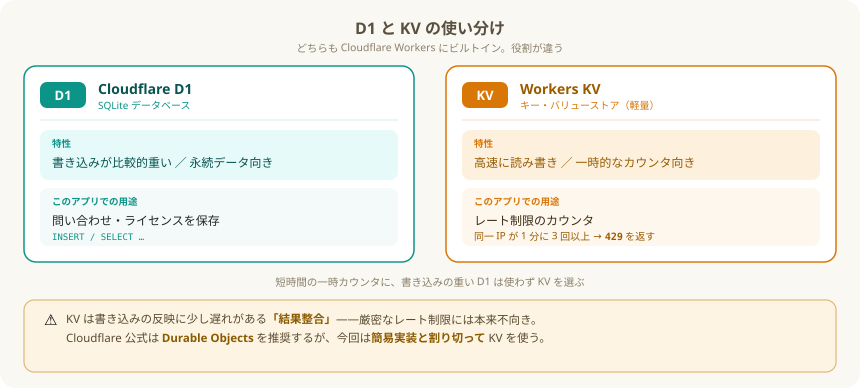
- Claude Code にまとめて任せる:
Cloudflare の D1 と KV を作成して、wrangler.jsonc に書き込んで。 なお、wrangler.jsonc の name はフロントの wrangler.jsonc と同じにして。name をフロントと同じにする理由: Day 2 でバックをデプロイすると同じ name の Worker を上書きする形になり、Day 1 で手に入れた URL（
https://<name>.workers.dev）がそのまま引き継がれる。name が違うと別 URL になってしまう。
なぜローカルで使わないのに先に作るのか？ —
wrangler.jsoncに実在のdatabase_id/ KV id が書かれていないと、[6] のリモートデプロイが失敗するから。ローカル開発自体はクラウドの D1/KV に触れないので、ローカルとクラウドのデータは別物（詳細は手順4）。 -
D1 … Cloudflare の SQLite データベース。問い合わせ・ライセンスなどを保存する
- API をまとめて実装させる
- 必要な機能を日本語でまとめて伝え、Claude にいっぺんに実装させてよい。API のパス・入出力の設計も基本 AI に任せるが、完了判定に使う
POST /api/contactとGET /api/meの2本だけはこのパスに固定する - この題材で要る機能の例:
- 問い合わせを受け付けて D1 に保存する（同一 IP から1分以内に3回以上来たら KV でカウントして 429（リクエスト過多）を返す）
- メールアドレスを受け取ってライセンスキーを発行する（決済なし・Day 2 の簡易版。Day 3 [8] で Stripe 購入 → Webhook 発行に差し替え）
- メールアドレス（フロントが
x-user-emailヘッダで送る）を受け取り、そのメールに紐づく情報を D1 から返す。これが Day 2 の「簡易ログイン（モック認証）」: ヘッダのメールを検証せず信頼してそのユーザーとして扱う（見つからなければ 401（未認証）や 404 を返す）。本物の認証（Clerk の認証トークンの検証）は Day 3 [9] Clerk で差し替える - ライセンスキーを検証する
- 保存するデータの中身（例: 問い合わせ＝名前／メール／本文）だけ先に決めておくと AI が迷わない。テーブル定義は AI に書かせ、
migrations/以下に置くよう指示する
Hono + Cloudflare Workers + TypeScript でバックエンドを実装して。 D1（SQLite）と KV を使うこと。マイグレーションファイルは migrations/ 以下に作って。 frontend/ のコードを見て、それに対応する API を backend/ に実装して。 必要な機能: - 問い合わせを受け付けて D1 に保存する（同一 IP から1分以内に3回以上来たら KV でカウントして 429 を返す） - メールアドレスを受け取ってライセンスキーを発行する（決済なしの簡易版） - x-user-email ヘッダのメールアドレスに紐づく情報を D1 から返す（ヘッダを検証せず信頼するモック認証。見つからなければ 401 か 404） - ライセンスキーを検証する API のパスは POST /api/contact と GET /api/me の2本だけ固定で、他は任せる。 - 必要な機能を日本語でまとめて伝え、Claude にいっぺんに実装させてよい。API のパス・入出力の設計も基本 AI に任せるが、完了判定に使う
- ローカル用の DB を用意する（マイグレーション）
Claude Code に依頼する:マイグレーション＝テーブル定義の SQL ファイル（
migrations/以下）を順に適用して、DB を作る・変える仕組み。ローカルの D1（--local）とクラウドの D1（--remote）はデータが別物。開発中は手元だけを使い、本番への反映は [6] デプロイ時にまとめて行う。タイミング コマンド 対象 API 実装中（今ここ） npm run db:migrate:local手元の D1（ローカル） デプロイ直前（[6]） npm run db:migrate:remoteCloudflare の D1（本番） 
npm run db:migrate:local を実行してローカルの D1 にテーブルを作って。 - フロントとバックを1つの Worker にまとめる
- 現状はフロントとバックが別々のポートで動いている。本番では同じ Worker から静的ファイルと API を両方配信する形にする
- これにより CORS（オリジンをまたぐ通信をブラウザが制限する仕組み。フロントと API の URL が別だと許可設定が要る）の設定が不要になり、URL も1本に統一される
- 統合後はデプロイを
backend/から行う（Day 1 に使ったfrontend/の単独デプロイはここで役目を終える）。実際のデプロイ手順は [6]
frontend/ をビルドして backend/ の Worker から配信できるようにして。 SPA なので未知のパスは index.html にフォールバックさせて。 - フロントのモック表示を実 API 呼び出しに差し替える
- 前提: フロントから実 API を呼ぶには同一オリジン配信（オリジン＝スキーム＋ドメイン＋ポートの組。ブラウザが「同じサイトか」を判定する単位）が要る。手順5 で統合済みなので、
npm run build:front && npm run devで起動すればフロントと API が同じ URL で動く（フロントを変更したら再度build:front）
モックを実 API 呼び出しに変えて。フロントと API は同一オリジンなので /api/... の相対パスで呼ぶ。- 差し替え後は npm run dev で表示された URL でブラウザ確認する
- 前提: フロントから実 API を呼ぶには同一オリジン配信（オリジン＝スキーム＋ドメイン＋ポートの組。ブラウザが「同じサイトか」を判定する単位）が要る。手順5 で統合済みなので、
必要な npm scripts（よく使う操作に名前を付けておく）
wrangler … の長いコマンドを毎回打つ代わりに、よく使う操作を package.json の script にまとめておくと楽。確認も追加も Claude Code に任せる：
| script | 中身 | 用途 |
|---|---|---|
dev | wrangler dev | ローカル起動 |
build:front | npm --prefix ../frontend run build | フロントを dist/ にビルド |
db:migrate:local | wrangler d1 migrations apply DB --local | ローカル D1 にマイグレーション |
db:migrate:remote | wrangler d1 migrations apply DB --remote | 本番 D1 にマイグレーション（[6]で使う） |
deploy | npm run build:front && wrangler deploy | ビルド→デプロイ一発（[6]で使う） |
test | vitest run | テスト（[5]で使う） |
package.json に以下の npm scripts が無ければ追加して。
- build:front: npm --prefix ../frontend run build
- db:migrate:local: wrangler d1 migrations apply DB --local
- db:migrate:remote: wrangler d1 migrations apply DB --remote
- deploy: npm run build:front && wrangler deploy
- test: vitest runローカルでの動かし方
このコマンドは自分で打つ代わりに、Claude Code に「ローカルで起動して動作確認して」と依頼して実行させるのがデフォルト。参考として手元で打つ場合のコマンドも示す:
cd backend && npm run build:front && npm run devフロントを変更したら毎回 npm run build:front が必要。npm run dev の出力に表示された URL で確認する。
ポイント
- 認証（Clerk）・決済（Stripe）・メール（Resend）は Day 2 では深追いしない → Day 3 のオプション課題 [7][8][9] で扱う
- Day 2 のログイン周りはモック認証でよい（手順3）。後から Clerk に差し替えやすい作りにしておくと教材としても良い
- 秘密情報は
.dev.vars（ローカル）/wrangler secret put（本番）で管理する。コードへのハードコードや AI への指示文への貼り付けは禁止 - Day 2 本編は環境変数・シークレット無しで動く（Stripe / Clerk / Resend のキーが要るのは Day 3 のオプションから）
コードレビュー（push 前に実施）
push する前に Claude Code の組み込みスキル（最初から入っている、/名前 で呼び出せる定型コマンド。スキルの自作は Day 3 [10] で扱う）でレビューをかける。ローカルの差分に対して動くので git push は不要。
/code-review— コードの正しさ・簡潔さ・効率のレビュー。バグや冗長な実装を指摘してくれる/security-review— セキュリティ観点のレビュー。SQL インジェクション等・認証の抜け・シークレットの扱いなどを確認してくれる
指摘があれば修正してから次のステップに進む。大きな問題がなければそのまま push してよい。
レビュー後に push する
バック実装の作業をコミットして dev ブランチに push して。各セクション完了のタイミングで push しておくと、[5] のテストが失敗したときに「どの変更で壊れたか」を git log から追いやすい。
✅ 完了の定義（[5] へ進む条件）
npm run build:front && npm run dev でサーバーを起動し、以下をブラウザで目視確認する（⚠️ コマンドの結果だけで満足しない。CORS・表示・状態管理などはブラウザでしか確認できない）：
- LP 表示: ブラウザで表示された URL のトップ（
/）を開き、LP が崩れずに表示されること - SPA ルーティング: ブラウザで
/mypageを開き、404 にならず画面が表示されること
（SPA は/mypageという実ファイルを持たずindex.htmlの JavaScript が画面を出すため、サーバー側に「未知のパスはindex.htmlに流す」設定が要る。404 になる場合はwrangler.jsoncのassets.not_found_handlingに"single-page-application"を追加してから再起動） - 未認証 API が弾かれる: ブラウザの DevTools（F12）→ Console タブで以下を貼り付けて実行し、
401または認証エラーのレスポンスが返ること
（API のパスは AI が生成したものに読み替える。ステータスが 200 のまま通ってしまう場合は認証ガードが機能していないので Claude Code に修正を依頼する）fetch('/api/me').then(r => console.log(r.status, r.url)) - バリデーション（入力チェック）が弾く: ブラウザで問い合わせフォームを開き、name・email・本文のどれかを空のまま送信する → エラーメッセージが表示されること（DevTools の Network タブで
400が返っているか合わせて確認するとなお良い。ただしブラウザの必須チェック（required）で止まった場合はリクエスト自体が飛ばないので 400 は出ない——API 側の検証まで見るなら Console でfetch('/api/contact',{method:'POST',headers:{'Content-Type':'application/json'},body:'{}'})のように不正なボディを直接送る） - 正常系の動作: 問い合わせフォームに正しい値を入れて送信 → 成功レスポンスが返り、画面の表示が期待どおり変わること
[5] 自動テストの実装
ゴール: 「正しいリクエストは通る・壊れたリクエストは弾く・ログインなしで保護 API に入れない」を npm test で自動確認できる状態にする。デプロイ前にここを緑にする
考え方（AI との壁打ち）
テスト観点を人間が決め打ちすると「表に無い＝テストしない」になりがち。何をテストするかも AI に出させ、人間はそれをレビューするのが抜けを防ぐコツ。
このワークショップでは3ステップの壁打ちでテストを作る:
- AI にテスト戦略を書かせる — コードを読んで「何を・なぜテストするか」を
docs/TEST.mdにまとめさせる - 人間が TEST.md をレビューする — 観点の抜けや「これはテストしなくていい」という箇所をチャットで指摘する
- AI にテストを実装させる — レビュー済みの TEST.md を元に実装させ、
npm testでグリーンを確認する
Resend・Stripe などの外部サービスはテスト中に呼ばない。実際の API を叩くとテストが遅くなり外部障害の影響も受けるため、fetch はモックに差し替える。
流れ
- 以下のプロンプトで TEST.md（戦略書）だけを作らせる:
このバックエンド（backend/）のコードを読んで、テスト戦略を docs/TEST.md にまとめてください。 テスト戦略には「何を・なぜテストするか・しないか」の判断も含めること。 テストファイルの実装はまだしないでください。 - 人間が TEST.md をレビューする —
docs/TEST.mdを自分で開き、最低限以下の4観点が含まれているかを確認する:- 外部サービスに依存しない純粋な関数のテスト
- 正しい入力で API が成功レスポンスを返すテスト
- 不正な入力で API が適切にエラーを返すテスト
- 未認証でログインが必要な API にアクセスしたとき、拒否されるテスト
抜けている観点があれば Claude Code に伝えて追記させる:
TEST.md に「未認証でログイン必須 API にアクセスしたとき拒否される」観点が抜けているので追記して。時間に余裕があれば、4観点のチェックだけでなく全文に目を通し、「これはテストしなくていい」という箇所の指摘まで行うのが本来のレビュー。
- TEST.md が固まったらテストファイルを実装させる:
docs/TEST.md の方針に従ってテストを実装してください。 テストは @cloudflare/vitest-pool-workers を使い、設定は cloudflareTest プラグイン方式で書いて。 外部サービスへの fetch はすべてモックしてください。@cloudflare/vitest-pool-workers＝テストを Workers と同じ実行環境で動かすための公式アダプタ。プロンプトのこの指定はそのままコピペでよい（設定ファイルの中身は AI が書く）
npm testでグリーンを確認
ポイント
- AI が書いたコードこそテストが要る（出力を鵜呑みにせず、テストで裏付ける）
- TEST.md が先、実装が後（方針を固めてから書かせると精度が上がる）
- Day 3 でオプション機能を追加するとき、このテストが安全網になる
完了したら push する
自動テスト実装の作業をコミットして dev ブランチに push して。✅ 完了の定義（Day 2 の到達点・前半）
npm testがグリーン（全ケース pass）- 最低限カバーできている：
- 外部サービスに依存しない純粋な関数（ライセンスキー生成・文字列マスク等）のテストが1つ以上
- 正しい入力で API が成功レスポンスを返すことを確認するテスト（例: 問い合わせフォームに正しい内容を入れて送ったとき、受付完了が返る）
- 不正な入力で API が適切にエラーを返すことを確認するテスト（例: 必須項目が空のまま送信したとき、入力エラーとして弾かれる）
- 未認証でログインが必要な API にアクセスしたとき、アクセスが拒否されることを確認するテスト（例: ログインせずにマイページ API を叩いたら弾かれる）
- → これが緑になったら [6] デプロイへ
[6] Cloudflare にデプロイ
ゴール: 自分の URL（https://<name>.workers.dev）で世界に公開（Day 2 のフィナーレ）
流れ
wrangler.jsoncを確認・修正するassets.directoryは配信する静的ファイルの場所（フロントのビルド結果）、assets.not_found_handlingは存在しないパスへのアクセスをindex.htmlに流す SPA 用の設定- binding＝Worker のコードから D1/KV を呼ぶための紐付け設定（[4] 手順2 で
wrangler.jsoncに書き込んだdatabase_id／KV のidのこと）
wrangler.jsonc を確認して。 ・D1/KV の binding id が実際に作成したリソースと一致しているか ・assets.directory がフロントのビルド結果を正しく指しているか ・assets.not_found_handling が "single-page-application" になっているか 問題があれば修正して。- リモート DB にマイグレーションを適用する
npm run db:migrate:remote を実行して本番の D1 にテーブルを作って。 - デプロイは必ず
backend/から行う。frontend/でwrangler deployすると Day 1 と同名の Worker を静的ファイルだけで上書きして API が消える（Day 1 に使ったfrontend/wrangler.jsoncは役目を終えている）:cd backend npm run deploy # フロントのビルド → wrangler deploy まで一発 - 発行された URL にアクセスして動作確認 🎉
- 発行された URL をチャットに貼って共有する
ポイント
- [5] のテストが緑なのを確認してから公開する（テスト → デプロイ の順）
- ローカル（
--localの D1）と本番（リモート D1）はデータが別物 - Cloudflare の無料枠の範囲で完結する
- Day 2 本編では Secrets 投入は不要（Stripe/Clerk/Resend を使う [7][8][9] で初めて要る。手順は Day 3 の共通セクション参照）
⚠️ ハマりどころ: Workers デプロイ
npm run deployが「フロントのビルド込み」なので、ビルドが通らないとデプロイも止まる → デプロイ前にローカルでnpm run build:frontが成功するか確認しておくと安全- リモート D1 のマイグレーション（
db:migrate:remote）を忘れると、API が「テーブルが無い」で失敗する
完了したら push する
デプロイ完了の作業をコミットして dev ブランチに push して。必要なら dev を main にマージして。✅ 完了の定義（Day 2 の到達点・後半）
- 自分の
https://<name>.workers.devにブラウザでアクセスして LP が表示される - 本番 URL で
/mypage等のルーティングも 404 にならず動く（404 になる場合は wrangler.jsonc のassets.not_found_handlingに"single-page-application"を追記してから再デプロイ） - （API を使う画面が）本番でも動作する
- （余裕があれば）公開した本番 URL でトップページ・
/mypage・API を1つブラウザで開き、ローカルと同じ挙動か目視確認する
Day 2 クロージング
- 全員が「
npm testグリーン +workers.dev公開 URL」に到達しているか確認 - Day 1 と同じ
workers.devURL への再デプロイ完了を確認（バック API が繋がっていること） - dev に push 済みかを確認（必要なら
dev→mainにマージして安定版を残す） - Day 3 のオプション課題から興味のあるものを選ぶ（Stripe / Clerk / Resend のアカウントを事前に作っておくとスムーズ）
Day 3: 育てる（オプション課題 + 発表会）
Day 3 最後の 30 分（1:30〜2:00）は最終発表会です。自分の公開 URL のデモを 1 人 3 分で発表します。詳細はページ末尾の「ラップアップ・発表会」を参照してください。
（難易度の目安: ★☆☆＝易しい / ★★☆＝ふつう / ★★★＝難しい）
| # | タスク | 追加すると制作物がどう変わるか | 難易度 | 詳細へ |
|---|---|---|---|---|
| [7] | メール（Resend） | 問い合わせが実際にメールで届くようになる（今は D1 に保存だけ） | ★☆☆ | → [7] メール |
| [8] | 決済（Stripe） | 「メール入力で自前発行」→ 本物の決済（Stripe）で買えるように | ★★★ | → [8] 決済 |
| [9] | ID 連携（Clerk） | 「メール入力の簡易ログイン」→ 本物のログイン（未ログインはサインインへ） | ★★☆ | → [9] ID 連携 |
| [10] | 運用保守 | 「運用チェックして」で監視・ログ・コストが見られるように | ★☆☆ | → [10] 運用保守 |
| [11] | セキュリティ | 自分のアプリの脆弱性を点検して1つ直す（＋回帰テスト） | ★★★ | → [11] セキュリティ |
| [12] | テスト設計（自分で決める） | [5] の与えられた観点を卒業し、何をテストすべきかを自分で判断して設計する（仕様起点の機能テスト＋リスクで優先順位） | ★★★ | → [12] テスト設計 |
選び方: 作りたい変化で選ぶ（上表）。依存: [11] は [9]（本物の認証）まで終えていると効果が高い（偽造トークンの検証はモック認証では試せない）。[12] は他の課題（特に [7][8][9]）まで実装したあとにやると、増えたコードをテスト対象にできて効果が高い。目安: ★＝重さ＝所要時間の目安（★☆☆ ≈ 30〜45分 / ★★☆ ≈ 45〜60分 / ★★★ ≈ 60分〜）。1つだけなら軽い [7]・[10] から。
まず [7][8][9] に共通すること
- 秘密情報の置き場所（本編 [4] のおさらい）
置き場所 ローカル backend/.dev.vars（.gitignore済み。雛形は.dev.vars.sample）本番 wrangler secret put <NAME>（常に暗号化される）、または Cloudflare ダッシュボードの環境変数。※ダッシュボードで追加するときは必ず Secret（暗号化）タイプを選ぶ。テキストタイプのままだと値が画面に表示され続けるダッシュボードで追加する場合（Worker の Settings → Variables and secrets → Add → Type を Secret に）:
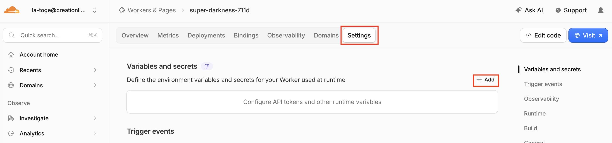
① Worker の Settings タブ → Variables and secrets の 「+ Add」をクリック 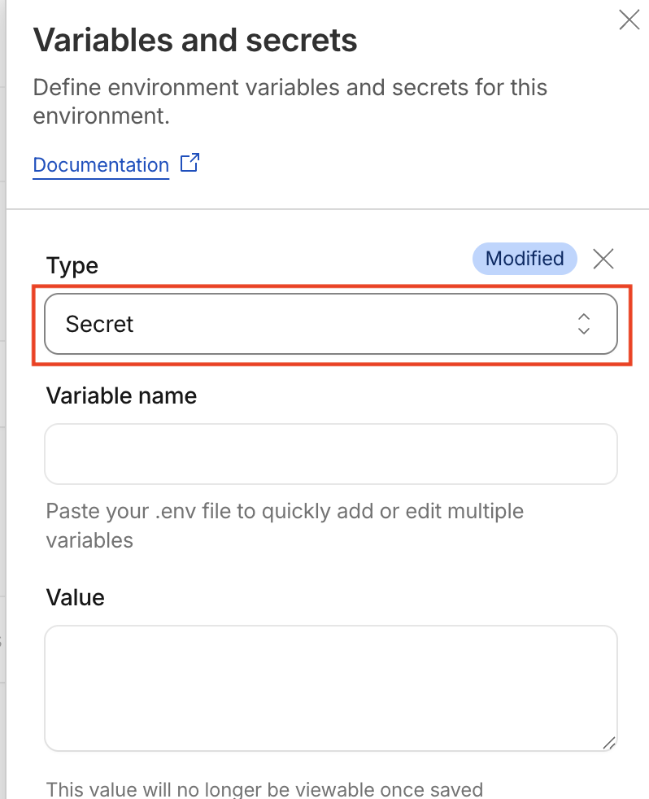
② Type で Secret を選ぶ（テキストのままだと値が残る）→ Variable name と Value を入れて保存。保存後は値が見えなくなる（"This value will no longer be viewable once saved"） .dev.varsに入れて参照させる。 - 必要な環境変数は、まず AI に聞く →「この機能に要る環境変数を
.dev.vars.sampleに追記して」 .dev.vars.sampleを.dev.varsにコピーして実際の値を入力する（cp .dev.vars.sample .dev.vars）。.dev.varsが既にある場合は必要な行だけ追記する.dev.varsを書き換えたらnpm run devを再起動（読み込みは起動時）- 各サービスの SDK（そのサービスを呼び出すための公式 npm パッケージ）も AI が入れてくれる（Resend / Stripe /
@clerk/*など）。自分で調べて入れる必要はない - 各サービスのログインは基本 Google SSO（シングルサインオン＝Google アカウントでそのままログインする方式。電話番号不要）。Stripe はメールアドレス登録（Google SSO ログイン後、リダイレクト先で設定）
- どの課題も流れは共通:
- 外部サービスで API キー（と必要なら ID）を取得
.dev.varsに入れてローカルで動かす- ローカルで動作確認できたら、本番にシークレットを投入してデプロイする
wrangler secret put <NAME> # 本番へシークレット投入（課題ごとに必要な分だけ） npm run deploy # ビルド → デプロイ
- オプションは必須ではない。興味のあるものから着手してよい（やらない／1つだけ、も可）。Day 2 が未了なら、その続きを優先しても構わない
[7] メール機能の実装（Resend）★☆☆
お題: 問い合わせ通知メール／ライセンスキー送付メールを実装する
学び: 外部 API 連携の基本形・Secrets 管理
サービス側の準備
- https://resend.com/login で Google SSO ログイン
- 左タブ API keys → Create API Key（権限は Sending access で十分。Sending domain は All domains を選択。名前は各自）


- 発行された API キーを手元にコピーしておく（
.dev.varsへの投入は、次の「実装〜確認」で変数名が決まってから行う）
送信ドメインはどうする？（ここがつまずきやすい）
独自ドメインから送るには DNS 検証（ドメインの所有者であることを DNS レコードの設置で証明する作業）が必要で、それは自分のドメインが決まる公開後の話。ワークショップでは次の方針を推奨：
- 動作確認は Resend のテスト用アドレス
onboarding@resend.devを From に使う- 「自分宛に届く」を確認するには十分
- 独自ドメインからの送信は任意（やりたい人だけ、デプロイ後に DNS を設定）
重要: この From はドメイン検証なしで送れるが、宛先は Resend に登録したアカウントのメールアドレス1つだけに限られる。それ以外のアドレスに送ると Resend がエラーを返す。
API キー作成時のスコープ設定について（本ワークショップでの方針）
Resend の API キー作成画面では「Sending domain」を絞り込めますが、本ワークショップでは "All domains" を選んで作成してください。独自ドメインを別途追加・DNS 検証しないと特定ドメインのキーが発行できず、手順が止まってしまいます。
実装〜確認
- From / To をどうするかも含めて AI に相談して実装する。あわせて「この機能に要る環境変数を
.dev.vars.sampleに追記して」と依頼し、確定した変数名で.dev.vars（backend/直下のローカル用環境変数ファイル。無ければ新規作成）に、サービス側の準備で取得した API キーを入れる（例RESEND_API_KEY=...）。入れたらnpm run devを(再)起動して、まずローカルで往復させる - 送ったら Resend ダッシュボードの Logs で Status を確認
- 200 以外が出たら、エラー本文をそのまま AI に渡して直す
- 本番でも使うなら、
RESEND_API_KEYを本番側にも設定してデプロイ（[7][8][9] 共通の手順参照）
✅ 完了の定義
自分宛にメールが届けば完了。余裕があれば: 連投対策（短時間に何度も送ると送りすぎ拒否エラーが返る）まで実装する。ローカルで動作確認できたら、wrangler secret put でシークレットを本番に投入して npm run deploy までを完了とする。
メール機能実装の作業をコミットして dev ブランチに push して。[8] 決済機能の実装（Stripe）★★★
お題: プラン購入（Stripe Checkout）→ Webhook でライセンス自動発行
実装ファイル（ここに作る）: backend/src/stripe.ts / license.ts
学び: Webhook の二重発行防止（同じイベントが再送されてもライセンスを1件だけ出す）・署名検証（届いた Webhook が本当に Stripe から来たものかを確かめる仕組み）
決済まで組み込んだ動くデモ（玄米茶サンプル）: https://testai-payment.ha-toge.workers.dev/ — LP の「購入する」→ Stripe Checkout（テストカード 4242 4242 4242 4242）→ マイページにライセンス表示、までが動く（Stripe テストモード）。

Day 2 で「自前発行」していたライセンスを、決済イベント起点の自動発行に置き換える課題。手順が多いので 5 フェーズに分けて進める（①アカウント準備 / ②プラン作成 / ③ローカルWebhook検証 / ④本番Webhook設定 / ⑤つなぎ込み）。
① アカウントとキーの準備
- https://dashboard.stripe.com/login で Google SSO ログイン
- サンドボックス（テストモード）はデフォルトで有効（ワークショップは終始これ）。テストモード＝本物の課金が発生しない Stripe の練習環境のことで、[5] の「自動テスト」とは別物
- 必要な環境変数を AI に聞き、
.dev.vars.sampleに雛形を作る - 検索窓で「API」と検索 →「開発者 > API キー」→ 標準キーのシークレットキー（
sk_test_...）をコピー →.dev.varsにセット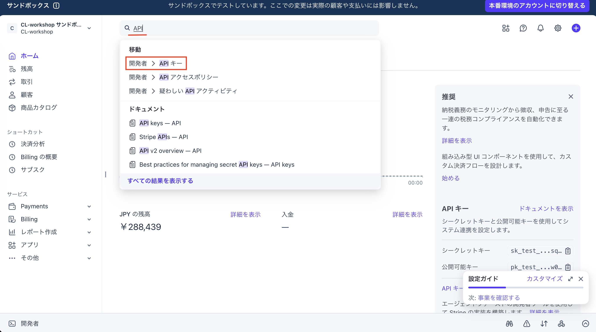
API キー」を選択する">① 検索窓で「API」と検索 → 「開発者 > API キー」を選択 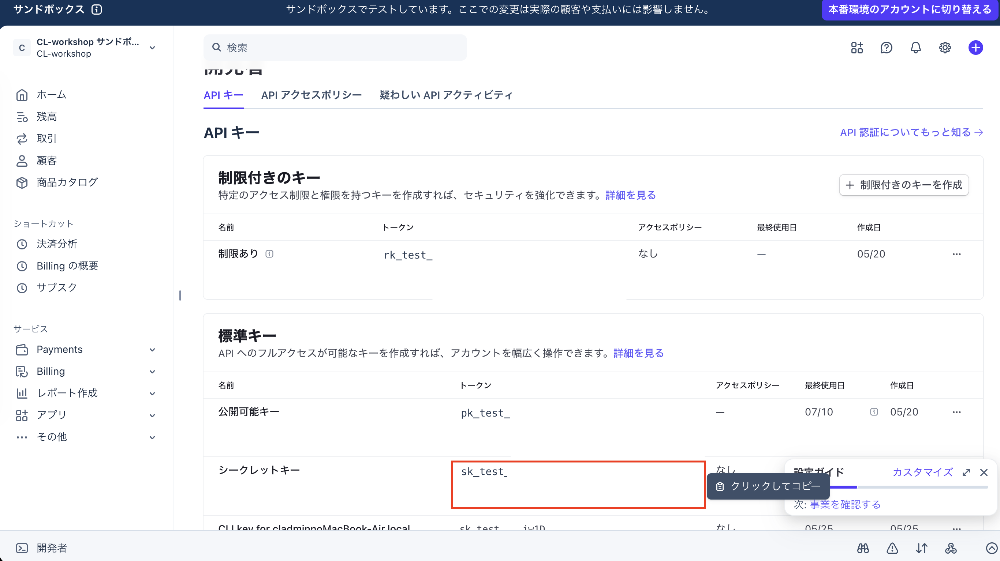
② 標準キーの シークレットキー（ sk_test_...）をクリックしてコピー →.dev.varsにセット - （Stripe CLI が未インストールの場合は事前準備 ④ を参照してインストールしてから実行）ターミナルで
stripe loginし、Stripe CLI にアカウントを認証
② プラン（商品）を作る
商品カタログ → ＋商品を作成で、月額・年額の2つの継続課金プランを作る（プラン名・金額は自分のサービスに合わせて決めてよい。以下は玄米茶サンプルでの例）：
| プラン名（例） | 種別 | 金額（例） | 請求 |
|---|---|---|---|
| 月額プラン | 継続 | ¥300 JPY | 毎月 |
| 年額プラン | 継続 | ¥3000 JPY | 毎年 |
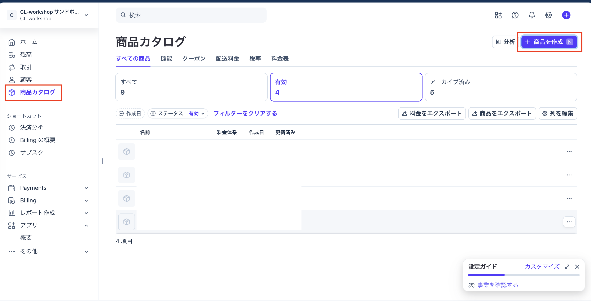
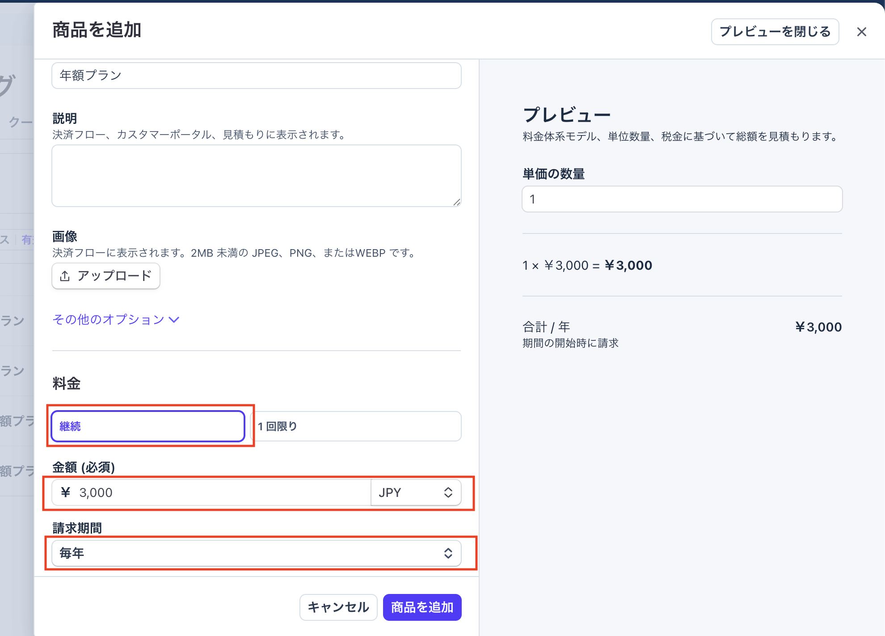
[1] Claude Design や LP の料金セクションで月額・年額以外のプラン（3つ目のプラン等）を追加した場合は、その分だけここでも Stripe の商品を追加で作ること。LP 側の料金プランと Stripe 側の商品は数・内容を一致させる。
- 作成後、各プランの Price ID（
price_...）を控える- 下の図の手順のとおり、ワークベンチ（Stripe の開発者向け管理画面）のデータマップ（オブジェクトの関連図）から取得する。Checkout に渡すのはこの Price ID
- （
prod_...は商品そのものの ID。コードで使うのはprice_...の方）

① 商品カタログで該当のプランを選択したのちに、下部の prod_...をクリック → ワークベンチが開く
② ワークベンチのデータマップで Product（prod_...）配下のPrice（price_...）を確認 - 2つの Price ID を
.dev.varsにセット（例PRICE_MONTHLY=price_.../PRICE_YEARLY=price_...） - 実装: 「Checkout セッションを作成する API エンドポイント（
stripe.ts）とライセンス発行ロジック（license.ts）を実装して」と Claude Code に依頼する（Checkout セッション＝1回分の決済手続きの情報。API で作成すると Stripe の決済ページの URL が返る）
③ ローカルで Webhook を検証する
前提: stripe.ts / license.ts の実装（AI への依頼）が完了してから進む。実装が未完了の場合は先に「Checkout セッションを作成する API エンドポイントと Webhook 受信エンドポイントを実装して」と AI に依頼する。
ローカル環境では Stripe から直接 Webhook が届かない（インターネットに公開されていないため）。Stripe CLI の
stripe listenを使って、Stripe のイベントを手元のバック（npm run devの出力に表示されているポート）に転送する必要がある。ターミナルを2つ使う。バック（
npm run dev）を起動したまま、別ターミナルでstripe listenを動かす。
- 別ターミナルで Stripe CLI を listen（転送先は実際にバックが起動しているポートに置き換える。例:）
stripe listen --forward-to localhost:<バックのポート>/webhook/stripe - listen 開始時に表示される Webhook 署名シークレット（
whsec_...）を.dev.varsにセット（例:STRIPE_WEBHOOK_SECRET=whsec_...）してnpm run devを再起動（stripe listenは止めなくてよい。バックのターミナルだけ Ctrl+C → 再起動） - テストカードで購入して、購入 → Webhook 受信 → ライセンス発行までローカルで通す
- テストカード番号は
4242 4242 4242 4242（有効期限＝未来の任意の日付／CVC＝任意の3桁） - テストモードのため実際の課金は行われない。ただし本物のカード番号は受け付けられずエラーになるため、必ず上記のテストカード
4242 4242 4242 4242を使う
- テストカード番号は
④ 本番（デプロイ後）に Webhook を設定する
ここでの「本番」はデプロイ後の公開環境を指す（Stripe を live mode＝本物の課金に切り替えるわけではない）。Stripe は③④とも終始テストモードのまま。③（ローカル）と④（公開環境）で署名シークレットが別物になるのは、Webhook の転送先 URL が違うため。
- デプロイ前に、ローカルの
.dev.varsに入れた値（Secret key・Price ID など）を本番側にも設定しておく（wrangler secret put/ ダッシュボード）。※ Webhook 署名シークレットだけは本番用を後から（手順6）入れる - 本編 [6] の手順で Cloudflare にデプロイ
- Stripe ダッシュボードの検索窓で「Webhook を作成」を検索して進む
checkout.session.completedは必須で選ぶ（他に必要なイベントは AI に聞いて選ぶ）- エンドポイント URL に、自分の Worker の Webhook 受信 URL（パスまで含めた URL）（例
https://<name>.workers.dev/webhook/stripe）を入力 - 作成後に表示される本番用の署名シークレットを取得 → Cloudflare の環境変数に投入（ダッシュボードなら Secret タイプで。共通の秘密情報の置き場所参照）
- 本番で決済確認


checkout.session.completed は必須で選ぶ（他に必要なイベントは AI に聞いて選ぶ）
https://<name>.workers.dev/webhook/stripe を入力して「続行」⑤ 購入後の戻り先とマイページ表示（つなぎ込み）
- Checkout には決済後の戻り先 URL（
success_url/cancel_url）が要る。成功時は Day 2 で作った/successページにつなぐ（AI に「購入後/successに戻して」と頼めばよい） - 「マイページにライセンスが出る」ための紐付けに注意:
- Webhook で発行したライセンスは購入者の emailに紐づく。マイページはログイン中ユーザーの email でライセンスを引く
- [9] Clerk をやらない場合は、Day 2 のモック認証の email（ヘッダ
x-user-email）と購入時の email を一致させること。ここがズレると「購入したのにマイページに出ない（別人扱い）」になる（フロントのリクエストヘッダX-User-Emailに固定値（例: test@example.com）をセットし、Stripe Checkout のcustomer_emailにも同じ値を渡すことで一致させる）
⚠️ ハマりどころ
- 署名シークレットはローカル（③）と本番（④）で別物（転送先 URL が違うため。Stripe をテストモードから切り替えるわけではない）。混同しない
- 署名検証は実装の細部（「生のリクエストボディ」で検証する等）でつまずきやすい。自分でコードを追わず、「Stripe の署名検証が公式推奨の方法（生のリクエストボディでの検証）で実装されているか確認して」と AI に点検させる
- 二重発行防止: Stripe は同じイベントを複数回送ってくることがある。同じ購入イベントが2回届いてもライセンスを1件だけ発行するように実装する（処理済みのイベント ID を記録して、既に処理済みなら無視する）
- email の不一致で「マイページに出ない」が起きやすい（上記の紐付けを参照）
✅ 完了の定義
テストカードで購入 → マイページにライセンスが表示されれば完了。余裕があれば二重発行防止まで確認する。ローカルで動作確認できたら、wrangler secret put でシークレットを本番に投入して npm run deploy までを完了とする。
決済機能実装の作業をコミットして dev ブランチに push して。[9] ID 連携機能の実装（Clerk）★★☆
お題: ログイン必須のマイページ（未ログイン → サインインへリダイレクト）
使うもの: @clerk/clerk-react（フロント）＋ Hono 側で Clerk の認証トークンを検証
学び: JWT（JSON Web Token＝ログイン済みであることを証明するトークン）の検証——リクエストが本当にログイン済み本人からのものかの確認——をバックでやる理由（フロントの見た目だけの保護は無意味）
ログイン（Clerk）まで組み込んだ動くデモ（玄米茶サンプル）: https://testai-login.ha-toge.workers.dev/ — 未ログインで /mypage はサインイン画面へリダイレクト → Google でログイン → マイページ表示、までが動く（Clerk 開発モード）。
Day 2 でモック認証にしておいた
GET /api/me（ハンドラ＝リクエストを受けて処理する関数。backend/src/routes/me.tsなど）を、本物の Clerk 認証に差し替える課題。Claude Code に『Day 2 のモック認証を Clerk トークン検証に差し替えて』と指示するだけで進められる。
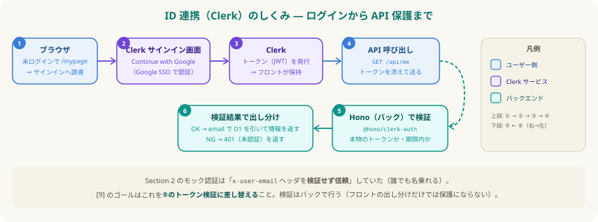
サービス側の準備
- https://dashboard.clerk.com/ で Google SSO ログイン
- アプリケーションを作成する。作成画面で Application name（後でいつでも変更可）と Sign in options（サインイン方法）をその場で選べる。ここで Email・Phone number・Username をオフ、Google をオンにする（メール認証は使わず Google SSO のみにする）。右側のプレビューが「Continue with Google」だけになっていれば OK。この設定はダッシュボードから後でいつでも変更できるので、作成後に直しても構わない。
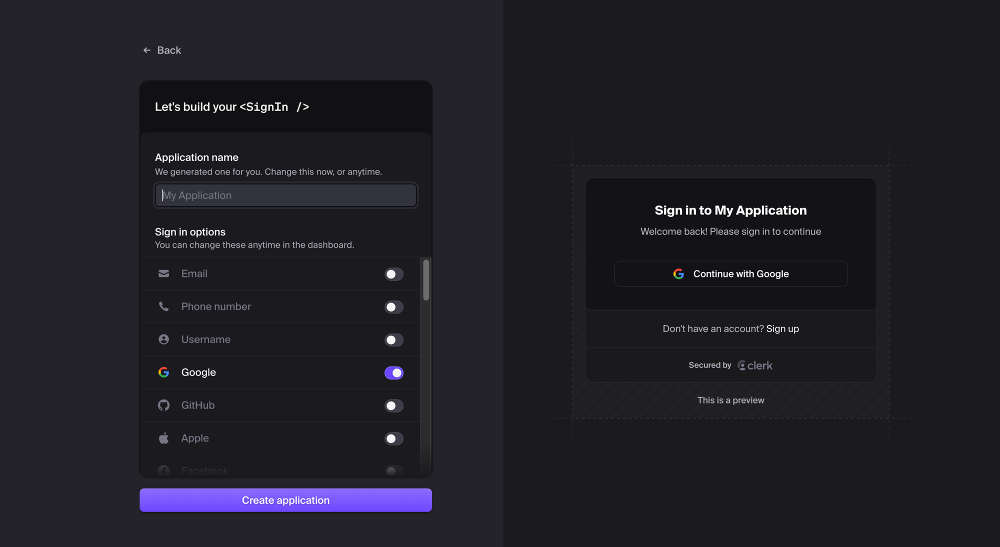
- Configure → Instance → API keys から2つのキーを手元にコピーしておく。env への投入は次の「実装メモ」で AI にパッケージを導入させたあとに行う（変数名は
@clerk/*の規約で下表に固定。置き場所を分けるのがポイント——ここを間違えやすい）：キー 置き場所 性質 Publishable key フロントの env（Vite なら frontend/.envにVITE_CLERK_PUBLISHABLE_KEY=...）。加えてバックのbackend/.dev.varsにも同じ値をCLERK_PUBLISHABLE_KEY=...で置く（@hono/clerk-authがバック側でもこのキーを要求するため。本番も同様に投入）公開してよい Secret key ローカル: バックの backend/.dev.vars/ 本番: Cloudflare ダッシュボードの環境変数（Secret タイプ）またはwrangler secret put CLERK_SECRET_KEY秘密。漏らさない 
実装メモ
- 必要なパッケージ（フロント
@clerk/clerk-react／ バック@hono/clerk-auth）も AI が導入してくれる。導入できたら、サービス側の準備でコピーした2つのキーを上表のとおり env にセットしてnpm run devを(再)起動する - フロントはアプリを
<ClerkProvider>で包み、サインイン UI を置く。未ログインなら/mypageに入れないようガード - JWT 検証は
@hono/clerk-authが推奨（バックでのトークン検証が一気に楽になる） - バックは必ずトークンを検証してから保護 API を返す（フロントの出し分けだけでは保護にならない）
- Day 2 のモック認証（ヘッダ
x-user-emailを信頼）を、この Clerk トークン検証に差し替えるのがゴール - 余裕があれば: マイページだけでなく購入（ライセンス発行）系の API も認証必須にし、購入者の email をクライアント入力ではなく検証済みトークンから取得する（認証なしだと他人の email を名乗ってライセンスを発行できてしまう——[11] セキュリティで指摘される穴になる）
Clerk ダッシュボード自体への管理者ログインは Google SSO で行います（手順1〜3）。参加者が自分のアプリにサインインする際も、上記の設定（メール認証オフ・Google SSO オン）が適用されるので Google アカウントでサインインします。
⚠️ ハマりどころ
- 本番（デプロイ後）でサインインが弾かれるときは、Clerk ダッシュボードに公開ドメイン（
https://<name>.workers.dev）を許可オリジンとして登録する
✅ 完了の定義
以下をすべて満たしたら完了:
- ローカル確認: 未ログインで
/mypageを開くとサインイン画面に誘導される（入れない） - ローカル確認: 未ログイン状態で
GET /api/meを叩くと 401（未認証＝「ログインしていないので拒否した」という HTTP ステータス）が返る（AI に「未ログインで /api/me を叩いて 401 になるか確認して」と依頼すればよい）。サインイン後は/mypageに自分の情報が表示される - 本番へのシークレット投入:
backend/.dev.varsに記入済みのシークレットのみをwrangler secret putで本番側に投入（上の「置き場所を分ける」表を参照）。フロントのVITE_CLERK_PUBLISHABLE_KEYはfrontend/.envからビルド時に埋め込まれるため、wrangler への投入は不要（npm run deployのビルドで自動反映） - 本番確認:
npm run deploy後、本番 URL（https://<name>.workers.dev）でサインイン →/mypageが表示される（サインインが弾かれる場合は上の⚠️ハマりどころ: 許可オリジン登録）
Clerk 認証実装の作業をコミットして dev ブランチに push して。[10] 運用保守★☆☆
お題: 公開後の運用を体験する（監視・ログ・障害特定・対策・コスト）
実装先: .claude/skills/（運用スキルを Claude Code に作らせる）
学び: 公開後の「運用」を Claude Code のスキルで仕組み化する
まず: Cloudflare API トークンを用意する
wrangler だけだと取得できる情報に制限がある。ログ集計やコスト試算には API トークンが要る。
- Cloudflare ダッシュボード右上のアイコン → Profile を選択

- 左メニューの API Tokens → Create Token をクリック

- 「Create Custom Token」の Get started をクリック

- Token name を入力し、Permissions を Account / Account Analytics / Read にして作成

- 取得したトークンを
backend/.cf-ops.tokenに保存（例CLOUDFLARE_API_TOKEN=...の1行）。.dev.varsとは別ファイルにする（理由は下記）。.gitignoreに.cf-ops.tokenを追加しておく
このトークンは Worker が使うのではなく、運用スキルが shell からファイルを読んで使う（Cloudflare の集計 API（GraphQL）を叩くため）。ここで注意:
.dev.varsは Day 1 の設定で Read を拒否しているので、スキルがcat等で読もうとするとブロックされる。そこで運用トークンだけは deny 対象外の別ファイル（.cf-ops.token）に分離する。ここに入れるのは Analytics 読み取り専用の低権限トークンで、Stripe/Clerk 等の高価値シークレット（.dev.vars）とは分けて扱う。本番 secret に入れる必要はない（ローカルにあれば十分）。トークンが無くてもwrangler tailのライブログは見られる。集計・コスト試算だけがトークン必須。
運用チェックを「スキル」にする
Claude Code のスキルとは、.claude/skills/<名前>/ ディレクトリに必要なファイルを置くことで「運用チェックして」のような自然言語で呼び出せる専用コマンドを登録できる機能。[4] で使った /code-review などの「組み込みスキル」は最初から入っているスキル、Day 1 で入れた security-guidance のような「プラグイン」はスキル等をまとめて配布するパッケージ、という関係。毎回同じ確認を Claude Code のスキル（.claude/skills/）にしておけば、「運用チェックして」の一言で再利用できる。作ってもらうスキルは5つ：
| # | スキル | やること | 置き場所 |
|---|---|---|---|
| 1 | インフラ障害確認 | 依存サービス（Cloudflare/Clerk/Stripe/Resend）の公開ステータスを確認 | .claude/skills/infra-status/ |
| 2 | ログ取得 | Cloudflare のログ／エラーを取得して問題がないか確認 | .claude/skills/cf-log-check/ |
| 3 | 障害箇所の特定 | ログ・直近デプロイをソースと突き合わせて原因を絞る | .claude/skills/fault-localize/ |
| 4 | 対策・回避策 | ログ内容から恒久対策・暫定ワークアラウンドを出す | .claude/skills/remediate/ |
| 5 | コストモニタリング | requests / CPU 時間からコストを試算 | .claude/skills/cost-monitor/ |
5つを一気通貫で回す統合スキル
ops-checkにまとめてもよい（.claude/skills/ops-check/）。いずれも Claude Code に作らせ、自分のサービス向けに調整する。
手順
- 上記の手順で API トークンを作成し、
backend/.cf-ops.tokenに保存する（.dev.varsとは別ファイル。理由は上記） - スキルを Claude Code に作ってもらう → 「運用チェックして」で実際に動くか確認
.claude/skills/ 以下に、本番運用チェック用のスキルを5つ作って。 1. infra-status: Cloudflare/Clerk/Stripe/Resend の公開ステータスページを確認して障害有無をまとめる 2. cf-log-check: wrangler tail で本番 Worker のログ・エラーを取得して問題がないか確認する 3. fault-localize: ログと直近のデプロイ差分をソースと突き合わせて障害箇所を絞り込む 4. remediate: 特定した原因への恒久対策と暫定ワークアラウンドを提案する 5. cost-monitor: Cloudflare の GraphQL Analytics API で requests / CPU 時間を集計してコストを試算する 共通の前提: - Cloudflare API トークンは backend/.cf-ops.token に CLOUDFLARE_API_TOKEN=... の形式で置いてある。 集計が必要なスキルはこのファイルを読んで使う（.dev.vars は読まない） - 使っていないサービス（Stripe/Clerk/Resend など）があれば対象から外して - 5つを順に実行して結果をまとめる統合スキル ops-check も作って。「運用チェックして」で ops-check が動くようにして
✅ 完了の定義
5つのうち最低1つの運用スキルが動作する（「運用チェックして」で応答が返ること）。残りは持ち帰りで作ってよい。
運用保守実装の作業をコミットして dev ブランチに push して。[11] セキュリティ★★★
お題: 自分のアプリをセキュリティ観点で点検し、最低1つ直す
ツール: Claude Code（/security-review・常時の security-guidance）＋ SonarCloud
参考: [5] で作った backend/docs/TEST.md の認証境界まわりのテスト（回帰テスト＝直した問題が再発していないかを毎回確かめるテスト。その土台にする）
学び: 「AI が書いたコード」を自分で点検できるようになる
見る観点
- 認証境界（ログインなしで入れる範囲と、ログイン必須の範囲の境目）: 未認証／偽造 JWT で 401 になるか
- IDOR（Insecure Direct Object Reference：権限のない他人のデータを横断参照できてしまう脆弱性）: 他人の email を body に入れても無視されるか（他人のデータを引けないか）
- 機密のマスク: API レスポンスにフルのライセンスキーが含まれていないか
2通りの点検を併用する
- Claude Code
/security-reviewで差分・コードを点検させる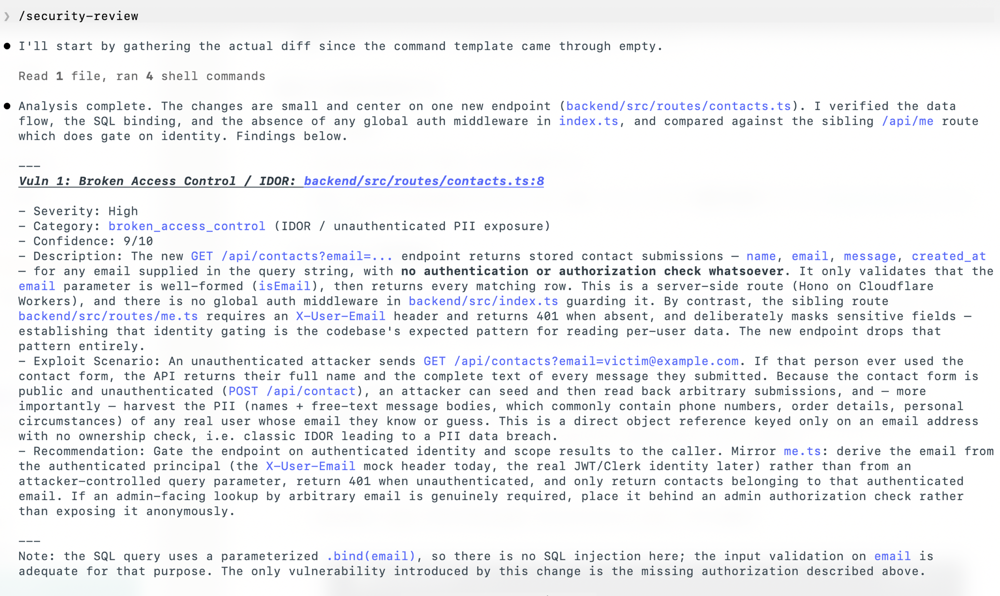
/security-review の実行例: 認証チェックのないエンドポイント（IDOR）を Severity・攻撃シナリオ・修正案つきで検出している - 事前に
security-guidanceを入れていれば、編集・コミットのたびに自動で点検されている（Claude Code セキュリティ対策参照）
- SonarCloud（静的解析）
SonarCloud とは GitHub と連携する静的解析 SaaS。コードを push するたびにセキュリティ脆弱性・バグ・コード品質の問題を自動検出し、Claude Code の差分レビューでは気づきにくいパターンを補完する。
⚠️ GitHub App のアクセス範囲について: SonarCloud の GitHub App 連携時は、必ず 「Only select repositories」 を選び、点検したいリポジトリだけを許可してください。「All repositories」を選ぶとプライベートリポジトリのコードが外部に送信される恐れがあります（詳細は下記ハマりどころ参照）。
- 点検対象を
mainブランチに push（SonarCloud はmain/ PR を解析）
- https://sonarcloud.io で GitHub SSO ログイン
- 右上の ＋ → Analyze new project

- 対象の GitHub プロジェクトを指定（初回は SonarCloud にリポジトリへのアクセス許可を求められる）。
- ここで GitHub App（SonarCloud）のアクセス範囲を聞かれたら、
All repositoriesではなくOnly select repositoriesを選び、点検したいリポジトリだけ許可する（下のハマりどころ参照）

- ここで GitHub App（SonarCloud）のアクセス範囲を聞かれたら、
- 解析完了を待ち、出た指摘を AI と一緒にレビュー（意味・直し方を AI に説明させる）

- 点検対象を
⚠️ ハマりどころ
- SonarCloud の指摘には誤検知（false positive）もある。鵜呑みにせず AI と判断する
- 解析単位を分けたいので、専用リポジトリを対象にするのが推奨（Git ブランチ参照）
- 意図しないリポジトリまで勝手に解析されることがある。原因は2つの組み合わせ:
- SonarCloud の GitHub App を
All repositories（全リポジトリ）で許可している - SonarCloud の Organization で新規リポジトリの自動取り込み（Automatic Analysis / auto-provisioning）が有効
- GitHub → Settings → Integrations → Applications → SonarCloud → Configure（https://github.com/settings/installations）で
Only select repositoriesに変更して対象を絞る - 個別プロジェクトだけ止めたいなら、SonarCloud の対象プロジェクト → Administration → Analysis Method の「Automatic Analysis」を OFF、または Administration → Deletion で削除
- SonarCloud の GitHub App を
✅ 完了の定義
見つけた問題を 1つ以上修正できれば完了。
セキュリティ修正の作業をコミットして main ブランチに push して。[12] テスト設計（自分で決める）★★★
お題: 自分のアプリで「間違うと一番痛い」機能を1つ選び、その正しい振る舞いを自分で仕様化して、そこから要るテストを自分で決めて実装する
ツール: Vitest ＋ Claude Code
前提: [5] の backend/docs/TEST.md とテスト一式（まだなら先に [5]）／[2] の SCREEN_SPEC.md（意図した仕様）
学び: 「AI が書いたコードのテスト」を AI 任せにせず、何をテストすべきかを自分の判断で設計できるようになる
[5] は「与えられた4観点」を通す最低ラインだった。[12] はその観点を渡さない——何をテストすべきかを自分で決めるのがゴール。テストの本数ではなく、判断の練習。
⚠️ 一番の罠: AI に「テスト書いて」と丸投げすると、AI は実装を読んで「今のコードがやっていること」をテストにする＝AI のバグごと正解として固定してしまう。だから機能テストは、まず意図した仕様（自分の言葉／SCREEN_SPEC.md）から導き、実装と突き合わせる。この順序が逆になった瞬間、テストは実装追認装置になる。
2つのレンズと、人間／AI の分担
- 機能レンズ（仕様起点・体系的）＝機能テストの土台。「この機能は何を保証すべきか」を仕様から積み上げ、入力・状態ごとに期待する結果を決める
- リスクレンズ（被害起点）＝「壊れたら困る」でどれを実際に書くか優先順位をつける。仕様に落ちない穴探し（探索的・モンキー的）も緩くここで
| 作業 | 人間 | AI |
|---|---|---|
| 意図した仕様を言葉にする | ◎ 人間のみ | ✕ 実装から推測させない |
| 期待動作表の行出し（入力クラス・状態遷移） | ○ 抜けと過剰を取捨 | ◎ 候補を機械的に大量列挙 |
| 各行の期待結果（具体値）を確定 | ◎ 意図に照らして決める | △ 提案のみ・実装を根拠にさせない |
| どのケースを書くか絞る | ◎「壊れたら困る」で判断 | △ 影響度の観点出し |
| テスト実装・効き目検証・カバレッジ | ○ 指示とレビュー | ◎ 実装・実行・破壊・計測 |
背骨: 人間＝意図と判断（何が正しいか／何を書くか／なぜ）、AI＝量・機構・批判（候補列挙／コード／実行／反例）。
流れ（1機能・約60分）
- （5分）対象を1機能に絞り、名前をつける — 自分のアプリで「間違うと一番痛い」機能を1つ選び、短い機能名をつける（例:「マイページのライセンス表示」「問い合わせ受付」／[8] をやった人は「決済 Webhook でのライセンス発行」）。この機能名を、以降のプロンプトの
<機能名>に入れる。全機能はやらない。ここがリスクレンズの入口 - （15分）その機能の「あるべき動作」（＝どう動くのが正しいか）を自分の言葉で書く
ここが [12] の心臓部。実装が今どう動いているかではなく、自分が作りたかった正しい動きを書く。白紙が難しければ、コードは見ずに次の3問に答えるだけでよい:
- この機能は誰の・何のためか
- 正常に使い終わったとき、何が「真」であるべきか（例: 本人の購入だけが見える）
- 絶対に起きてはいけないことは何か（例: 他人の購入が見える／未ログインで中身が返る）
記入例: 機能名を「マイページのライセンス表示」とした場合、上の3問への答え（＝あるべき動作）はこう書ける:
- ログイン中の本人の購入・ライセンスだけが見える - 他人のメールを指定しても、他人のデータは絶対に見えない - 未ログインでは中身を返さず弾く - ライセンスキーは全部見せず末尾数桁だけにする（漏洩対策） - 購入がない人にはエラーではなく「購入なし」を返す⚠️ ここを AI に丸投げしない。 「この機能の仕様をまとめて」のように AI に書かせると、AI は backend の実装を読んで書くので、出てくるのは"仕様"ではなく"今のコードがやっていることの説明"。それを土台にすると実装追認に逆戻りする。どうしても手伝わせるなら 「backend のコードは読まず、
SCREEN_SPEC.mdと私の説明だけを根拠に」と縛り、出てきた各行を自分で取捨して、自分で理由を説明できる状態にしてから次へ進む。 - （この続き）書いた「あるべき動作」を AI に期待動作表へ展開させ、
docs/TEST.mdに書き出す次は私が書いた「<機能名> のあるべき動作（正しくはこう動く）」です: （↑で書いた3〜5行を貼る） これを期待動作表に展開して、docs/TEST.md に「[12] <機能名> 期待動作表」として追記して。 表は「入力・状態 | 期待結果 | 書く」の3列にする。 入力の同値クラス（正常・不正・境界・空・重複）と、状態・遷移 （例: 購入→マイページ表示、二重実行、未ログイン→ログイン後）で行を増やして。 ただし「期待結果」と「書く」の2列は空欄のままにして——そこは私が埋める。 実装コードは読まず、上の仕様だけを根拠にすること。docs/TEST.mdを自分で開き、各行の「期待結果」列を埋める（AI が埋めた場合も、意図に照らして検算する）。「エラーが出ない」ではなく「この値が返る」まで書く
- （10分）書くケースを絞る — 行は多すぎるので全部は書かない。
docs/TEST.mdの表の「書く」列に、今回テストする行だけ ◎ を入れる（「壊れたら困る」順に選ぶ。全部には付けない＝これがリスクレンズ） - （15分）AI にテスト実装させる（期待値は自分の表の値を使わせる）
docs/TEST.md の期待動作表で「書く」列が ◎ の行だけ、テストを実装して。 各テストの期待値は表の「期待結果」列の値をそのまま使い、 あなたが実装コードから推測しないこと。外部サービスへの fetch はモックのままで。npm testでグリーンを確認
- （10分）わざとコードを壊して効き目を検証 ＋ 敵対的レビュー1往復
① いま追加したテストが「効いている」か確認したい。対象の関数のしきい値／条件を 1つだけ一時的に壊して、該当テストが赤くなることを見せて。確認できたら元に戻して。 ② 私の期待動作表から漏れている振る舞いはある? また、書いたテストの中で 不要と思うものがあれば根拠つきで指摘して。- 赤くならないテストは結果を検証できていない（例: レスポンスの中身を見ていない）→ 直す
- ②の指摘は採否と理由を人間が1行残す（AI が正しいとは限らない）
- （5分）コミットする
テスト設計の作業をコミットして push して。
さらに余裕があれば（任意）
- 2機能目に同じループを回す
- カバレッジで表から漏れた挙動を発見する（数字を目標にしない・発見ツールとして使う）:
テストをカバレッジ付きで実行して、一度も通っていない分岐を教えて。 それが期待動作表に無い挙動なら、表に足すか私が判断する。
⚠️ ハマりどころ
- 丸投げ厳禁: 「いい感じにテスト書いて」だと AI は実装の“現状”をテストにする＝バグごと固定。意図した仕様を先に自分で書くのが唯一の防ぎ方
- 期待結果を「エラーが出ない」で済ませない。「この値が返る」まで書かないと、壊しても赤にならない
- 全機能を網羅しようとしない。1機能で時間切れなら深掘りは切ってよい
✅ 完了の定義（判断の跡で確認）
- 1機能について「あるべき動作（正しくはどう動くか）」を自分の言葉で書いた
- 期待動作表を起こし、各行の期待結果を自分で埋めた
- リスクレンズで「書く／書かない」を判断した（
docs/TEST.mdの「書く」列に ◎ がついている） - 追加した各テストが表のどの行（どの保証）を守るか言える
- 1つ以上のテストで「壊すと赤」を確認した／
npm testが最終的にグリーン
ラップアップ・発表会（Day 3 の最後 30 分）
最終発表会（1人3分）
Day 3 の最後の 30 分を発表会にあてる。1人3分で手短に。
- 自分の公開 URL のデモ
- Day 3 で追加した機能の紹介
- 「AI への頼み方で一番効いた工夫」を1つ共有
振り返り
- 3日間で体験した開発サイクル: デザイン生成 → 実装 → テスト → 公開 → 機能拡張 → 点検
- AI 開発で効いたコツの総まとめ
- 1発で完璧を狙わず、会話で直す
- やりたいこと・受け入れ条件を先に .md 化してから渡す（細かい設計やテスト観点の洗い出しは AI に任せる）
- 秘密情報は AI に渡さない
- テストがあるから大胆に拡張できる
- 持ち帰り: 自分の URL で公開された自分の SaaS 🍵
- 質疑応答・アンケート（詳細は当日案内）
後片付け
3日間で外部サービスに実リソースを作った。使い続けるものは残し、使わないものは片付ける/無効化する。放置は無料枠の圧迫や不要な鍵の漏洩リスクになる。
迷ったら: 公開 URL（Cloudflare Worker）は残し、今後使わない鍵（Stripe / Clerk / Resend など）は無効化する。下表で自分の使い続けたい機能だけ「残す」、それ以外は「片付ける」を選ぶ。
作ったリソースの退場手順
| リソース | 残す場合 | 片付ける場合 |
|---|---|---|
| Cloudflare Worker / D1 / KV | ポートフォリオとして公開したままでよい（無料枠内） | ダッシュボードで Worker を削除（D1・KV も個別に削除） |
Cloudflare API トークン（.cf-ops.token） | [10] の運用チェックを続けるなら残す（低権限の Analytics 読み取り専用） | ダッシュボードでトークンを Revoke（無効化）し、手元の .cf-ops.token も削除 |
| Stripe（テストモード） | そのまま放置で害はない（テストモードは課金されない） | 不要なら Webhook エンドポイントを削除（live mode には切り替えていないので実害なし） |
| Clerk アプリ | 残すならそのまま | 不要ならアプリを削除。frontend/.env の鍵も消す |
| Resend API キー | 公開アプリでメール送信（[7]）を使い続けるなら残す | ダッシュボードで API キーを Revoke（無効化） |
| SonarCloud / GitHub App | 継続解析するなら残す | 不要なら SonarCloud のプロジェクトを削除し、GitHub の Installed App から権限を解除 |
原則: 鍵（API キー・トークン）は「消す」より先に「無効化（Revoke）」する（消しても発行済みの鍵は生きているため）。手元の .dev.vars / .cf-ops.token はローカルファイルなので削除でよい（Git には元々入れていない）。
3Days ワークショップフロー — AI とつくる「自分の SaaS の MVP」
付録: Claude Code 認証切り替えガイド
対象: 普段は API キーで使っている人が、一時的に Claude Code サブスクに切り替え、用が済んだら API キーに戻すための手順。
これだけ覚える: どのキーを使うかは~/.claude.jsonの記録で決まる。rejectedにあるキーは無視されてサブスクが使われ、approvedにあるキーは使われる（サブスクより優先）。 切り替えとは、この記録を/configや起動時プロンプトで切り替えること。
認証の記録は ~/.claude.json にある
「どのキーを使う / 使わない」は ~/.claude.json の customApiKeyResponses に記録される。
approved（使うキー）と rejected（使わないキー）の2つの配列があり、キーは末尾20文字だけが記録される（フルキーは保存されない）。
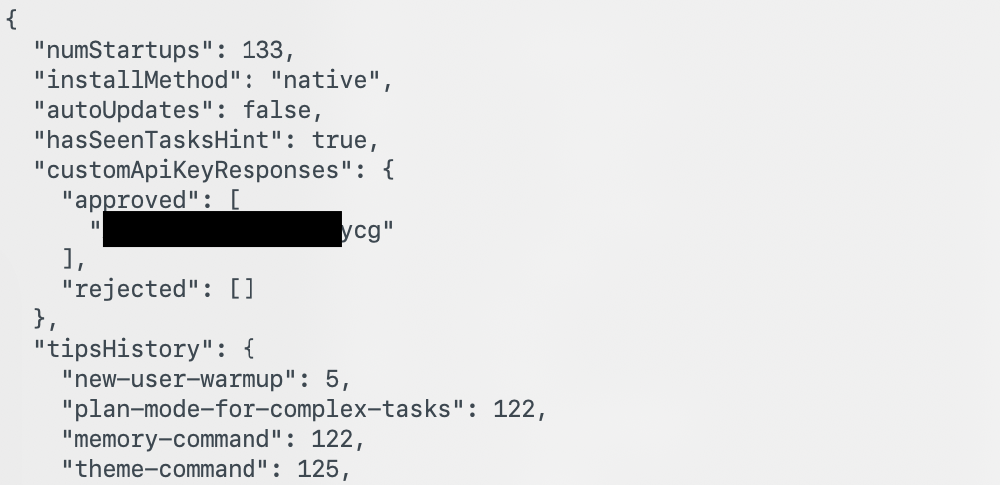
~/.claude.json の例 — approved に API キーが入っている＝この API キーで動いている状態キーの3つの状態
| 状態 | 意味 | 起動時の挙動 |
|---|---|---|
approved | このキーを使う、と承認済み | この API キーで動く（サブスクより優先） |
rejected | このキーは使わない、と拒否済み | キーを無視してサブスクで動く |
new | まだどちらも選んでいない | 「このキーを使う？」と確認が出る |
① API → サブスク: 一時的にサブスクへ切り替える
普段の API キー運用から、一時的にサブスクを使い始めるとき。
- Claude Code のセッション内でログアウトする（
approvedが空になり、古いサブスクのログインも消える）。/logout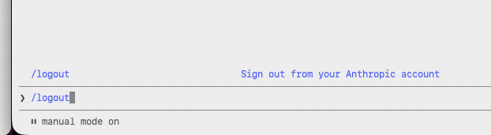
/logout（Anthropic アカウントからサインアウト） - Claude Code を起動しなおす。env に API キーが残っているので「このAPIキーを使うか？」と聞かれる。ここで 「2. No (recommended)」を選ぶ。
claude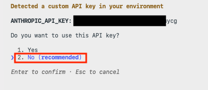
env の API キー検出プロンプト → No を選ぶ - No を選ぶと、ログイン方法の選択画面が自動で表示される（
/loginを打つ必要はない）。「1. Claude account with subscription」を選び、ブラウザで claude.ai（Pro / Max 等）にログインする。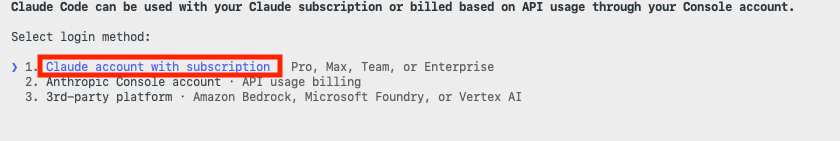
ログアウト後に claude を再起動すると自動表示される → サブスクを選ぶ - 認証方式を確認する。
claude.aiになっていれば成功。~/.claude.jsonはapprovedが空・rejectedに当該キーが入った状態になる。/status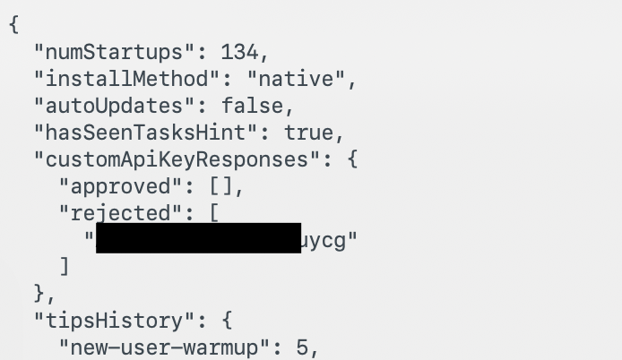
切替後: approved が空、rejected に API キー
環境変数の API キーは 消さなくてよい（/logout が承認を外すのでサブスクが使われる）。
ただし起動のたびに確認プロンプトが出るのが煩わしければ、そのシェルで unset ANTHROPIC_API_KEY しておくとプロンプトが出なくなる。
② サブスク → API: 普段の運用に戻す
サブスクの用が済んで、普段の API キーに戻すとき。ゴールはキーを rejected から外すこと。/config の ON で rejected から外れ、approved として記録される。
- env に API キーがあることを確認する（無ければ設定）。普段
~/.zshrc等に書いてあるならそのままでよい。export ANTHROPIC_API_KEY="sk-ant-xxxxxxxx" - Claude Code を起動する。
claude - API キーを有効化する。① の直後はキーが
rejectedに入っているため起動時プロンプトは出ない。/configを開き「Use custom API key」を ON にする（キーが未決定=newの場合は起動時に確認が出るので、そのときは「1. Yes」でもよい）。/config - 認証方式を確認する。API キー利用になっていれば成功。
~/.claude.jsonはapprovedに当該キーが入りrejectedが空の状態に戻る（冒頭の~/.claude.jsonの例と同じ状態）。/status
一度「使わない」を選んでいると、キーは rejected に入っている。
/config の ON で自動的に approved へ移るので問題ない。
手動でやるなら ~/.claude.json の customApiKeyResponses.rejected から
該当キーの末尾20文字のエントリを削除する（削除すると new に戻り、再度確認プロンプトが出る）。
確認とトラブルシュート
確認に使うコマンド
現在の認証方式を見る（Claude Code セッション内）:
/statusapproved / rejected の登録件数を確認する（キーの値は表示されない）:
jq '.customApiKeyResponses | {approved:(.approved|length), rejected:(.rejected|length)}' ~/.claude.jsonうまく切り替わらないとき
| 症状 | 原因 | 対処 |
|---|---|---|
| サブスクにしたのに API のまま | キーが approved に残っている | /logout、または /config のトグルを OFF |
| API にしたいのに使われない | キーが approved に無い（new/rejected） | /config を ON、または起動時プロンプトで「使う」 |
| ログインしても接続が切れる | ANTHROPIC_AUTH_TOKEN / CLAUDE_CODE_OAUTH_TOKEN が env に残存（承認ゲート無しで効く） | 該当変数を unset して再起動 |
/logout しても API が消えない | /login で入力・保存したキー（keychain）は logout で消えない | /status でソースを確認し、/login でサブスクに入れ直す |
秘密情報の扱い: API キーの値をチャットやコードに貼らない。git 管理下のファイルにも書かない。恒久設定は各自の ~/.zshrc 等にとどめる。
仕組み（詳細・読まなくても切り替えはできます）
認証の優先順位
複数の認証情報があると、上ほど優先される。
| 順位 | 認証方式 |
|---|---|
| 1 | クラウドプロバイダの資格情報（Bedrock / Vertex 等） |
| 2 | ANTHROPIC_AUTH_TOKEN（Bearer トークン） |
| 3 | ANTHROPIC_API_KEY — ただし approved のときだけ採用 |
| 4 | apiKeyHelper スクリプト |
| 5 | CLAUDE_CODE_OAUTH_TOKEN |
| 6 | サブスクの OAuth（/login で保存） |
ANTHROPIC_API_KEY は承認ゲートがあり、未承認なら無視されてサブスクにフォールバックする。
一方 ANTHROPIC_AUTH_TOKEN / CLAUDE_CODE_OAUTH_TOKEN はゲートが無く、セットされていれば効く。
/logout が実際にすること
customApiKeyResponses.approvedを空にする（承認済みキーが外れる）- サブスクの OAuth 資格情報を消す
- オンボーディング状態をリセット → 次回起動で確認プロンプトが再表示される
rejectedには何も追加しない。/loginで保存した keychain 上のキーも消さない
2つの「キーの保管場所」
- 環境変数
ANTHROPIC_API_KEY… 承認（approved/rejected）で制御。本ガイドの前提。 - 保存キー
primaryApiKey（macOS Keychain）…/loginでキーを直接入力した場合の保管先。/logoutでは消えない。env 運用なら基本使われない。
補足: --bare / CLAUDE_CODE_SIMPLE などの簡易モードや非対話実行（claude -p）では、
確認プロンプトを出さずに env のキーを直接使う経路がある（＝承認ゲートを通らない）。通常の対話起動は承認ゲート経由。
出典: Claude Code 公式ドキュメント（authentication）＋ v2.1.216 の実挙動確認。動作確認時点: 2026-07。